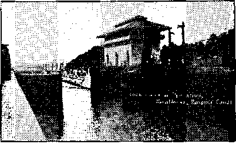

1938
Consolation
Magazine
Contents
The Degradation of the Name of
Counsel by J. F. Rutherford
U. S. Representation at Washington
Watch Tower Calls Shaughnessy's Bluff 22
West Indies and Central America
Yoghurt; by an Enthusiastic Armenian
By Trail and Stream and
British Comment
Roman Catholics and the Scriptures 29
Published every other Wedneeday by
THE GOLDEN AGE PUBLISHING COMPANY, INO. 117 Ad time St., Brooklyn, N. Y., U. S. A.
Pre el de nt Clayton J. Wood worth
Vloe-Preeldent Nathan H. Knorr
Secretary and Treasurer Charles E. Wasner
Five Cent* a Copy
fl a year In the United States $1,25 to Canada and all other countries
NOTICE TO SUBSCRIBERS
Remittances: For your own safety, remit by postal or express money order. When coin or currency la lost in the ordinary malls, there is no redress. Remittances from countries other than those named below may be made to the Brooklyn office, but only by International postal money order.
Receipt of a new or renewal subscription will be acknowledged only when requested. Notice of Expiration is sent with the journal one month before subscription expires. Please renew promptly to avoid loss of copies. Send chanpe of address direct to us rather than to the post office. Your request should reach us at least two weeks before the date of Issue with which It Is to take effect. Send your old as well as the new address. Copies will not be forwarded by the post office to your new address unless extra postage Is provided by you.
Published also in Bohemian. Danish, Dutch, Finnish, French, German, Greek, Japanese, Norwegian, Polish, Portuguese. Spanish. Swedish. Hungarian. Ukrainian.
OFFICES FOR OTHER COUNTRIES
England st Craven Terrace, London, W. 2
Canada 40 Irwin Avenue, Toronto 5, Ontario Australia 7 Beresford Road, Strathfl eld. N.S.W. South Africa £22 Boston House, Cape Town
Entered as second-class matter at Brooklyn, N. Y., under the Act of March 3, 1872.
Appetizers
Badly Tangled Sioux City Doctor
A Sioux City (Iowa) doctor telegraphed his senator in Washington;
Haven’t read farm control law in entirety. . . , We can’t help won-‘udMkdZjfl dering if farmer is allotted one calf and cow has twins, whether law specifies that the officials shoot a calf, the cow, the farmer or the bull. The senator (Senator Gillette) rose to the occasion and wired back what the doctor should have known in the first place: that the proper course would be to shoot the farmer’s senator. Some people do have to have everything explained to them, don’t they!
In a Rural School .
■ In a rural school in Columbus county, North Carolina, a teacher noticed a boy with a cud of tobacco in his mouth; she made him empty his mouth and give up the plug of tobacco he had in his coat pocket. The next day she received a letter from his mother reading as follows: ,
Dere Madum: I hear tell that you taken Johnie’s terbacco from him. If you wants some terbaoco let me know and I’ll fetch some to you but pieze don’t bother my Johnie’s terbaoco.
“Tickets No Good!”
■ A lady was having difficulty in teaching her new Chinese servant how to receive calling cards. The lady went outside and entered her own front door, giving the Chinaman a card. The next day two lady callers presented their cards. Comparing them with that of his mistress, the Chinaman replied:
“Tickets no good. Can’t come in.”—Labor.
How He Got the Money
■ A subscriber explains that the way he got the money to pay for his subscription was that the wolf that came to his door had pups in his kitchen, and he sold the pups and so got the money. For telling this he gets 365 days’ indulgence for being the best prevaricator in seventeen states.
Three-Year-Old Wisdom
■ A three-year-old citizen of Texas, learning that his father was being transferred to a post down east, was heard to close his evening prayer:
Good-bye, dear God, I am moving to New Jersey.
CONSOLATION
“And in His name shall the nations hope.”—Matthew 12:21, A.R.V.
Volume XIX Brooklyn, N, Y.r Wednesday, September 7, 1938 Number 495
The Degradation of the Name of Horace Bushnell
WOULD you believe it that if Horace Bushnell, Hartford’s most distinguished citizen, returned to the city he did so much to beautify, he would be denied the right to give a lecture on the Kingdom of God in the Horace Bushnell Memorial Hall on terms that he could accept? See the rental agreement (since canceled because of the absurd, impossible terms of the four paragraphs marked “x”) which appears on this page.
To appreciate this degradation of Mr. Bushnell’s name you should know something about this remarkable lawyer, teacher, editor, travel er writer and speaker, one of the most capaole men of his time. He lived 18021876, was at one time editor of the well-known New York Journal of Commerce, was the first president of the University of California, and was offered the presidency of Middlebury College. His principal activity in life was as pastor of the old (Congregational) North Church, now the Park Church, of Hart-ford^ during the years 1833-1859.
When he resigned because of ill health the congregation gave him a purse of $10,000 cash (a large sum for those days), indicating the high esteem in which he was held. In his last sermon he said: ■
aaut lunar
amt* frttatll Holl
Eartford, TH* ar ti* MlteteXX Misarltl ItalX Mtvby cviftfar,
Mtelteat to tin t«w of tils Vba of Ite oal* aadltoriw*
tea ibt Bit La * Trot JBteltfr for a Mmatio* a* Otter of
ftitw, Kaitep, iepiaooair •, ID uS U , USB,
n asntlUntlM of ■ rtitU f« of ou ttejMA, rtl*tf-fl«a ttLUfl (IWII Mnaa MAtaUl VteortaX B*li, <■ llnw( will pnrtda ftr tala eaaYMtLM tebt HMMiry mLaKmk* aarvloa 0*4 itl» *<■** Libor, tl*
uib of U« far tte rteaaptlo* nf st «■•««« try win ft* -
lABdn to tlw HoraatLao* vio Auden Trlaybaoo * TaXasrapiL Onnar <* St** ufl Suilv tfliTeM, fitplnteor la Mt .11, rupMllaaly, Tt» VBitfctMfer imt * Irirt at Jotm, ktfaa* to Ite fol-
LcwLag t*T»:
Upo* *i4iio4 tn* 1*4*“ w t* *** i**«r • 4*jM>u*-or
Itrtt Maine dcllan U> ba antllted M late rttUl
*a or titfan 8, LtM, tte la«*aa oil! Mka uijLfte
tetbo *f tbte balug* flf t«VH kuXNft teUtf*
tfttr mbbLo* of tn* MmatLoa t&a 1*m<* *11A b* r*ip«;il>l* for op ill ;M<rtu m< popara loft ia aat tfvuad Iba atfllorluB,
- . Ttt*r* *h«ll tea m dLitrlbuti-n, Mills*, Mtellaatl-n or m&Io broatoait tf tar alvartliasttV of ilt DMTnlLoa V tn* Xteiiaa ar uy Of Iti Moot* ar entente ttea Itano itell tert imrrt tte Inter'* vrttt* tppnnl a/ tuk *4T*rtiil*a mto rl «!■
Th* lantt i*ratt ta<t tin tforooiatiout ■tarttlata* ultrial, wtaottef df.rVrltN.ta4 rrtXltly or to th* tuftttactt af th* MOYtittloa, atell taauia ** nt Mcatnad ai u atttak, (Lrtert or taplltet, W*O tear raXigite* faith, anad at arauliattaL
My dear people I cannot have again; they are mine no more; but it will be something, if I may, to die among them and be finally lodged, as a resurrection guest, in the dust of a city whose people I have loved.
It is reasonably in-, ferred from this that Horace Bushnell believed the words of the psalmist that when a man dies “his breath goeth forth, he returneth to his earth; in that very day his thoughts perish” (Psalm 146:4); believed the words of the prophet Isaiah (26:19), “Awake and sing, ye that dwell in dust”; believed the Savior of men, that all the dead are in their graves and that they shall 'hear his voice, and come forth’ (John 5:28,29), for, if there be no resurrection of the dead “then they also which , are fallen asleep in Christ are perished”,—1 Corinthians 15:18.
One might say that Bushnell was a credit to Hartford, but that would not be putting it strong enough. He was one of the first great city planners and the work which he did made Hartford a delightful city to live in and to pass through. At a critical time he went before the city fathers with an elaborate plan showing what the city should do to grow wisely and well. The plan was adopt-
ed, maps and all; for Bushnell was a natural civil engineer. Thirteen years before there was a railroad to the Pacific coast he went through by stage and mapped out almost the exact route of the first transcontinental line.
Concerning his work in laying out Hartford, a writer in the Courant said:
Who has done more than Dr, Bushnell to make our city the admiration of the passing traveller as well as the delight of those who have it for their hornet The park which fitly bears his name is only a conspicuous instance of what he has been doing for the beautifying of the city these many years. How many buildings, public and private, are the better for his wise suggestions! How many builders have profited by his mechanical skill and artistic sense!
What a strange thing it would be if this man, returning from the grave, could not speak in the memorial which bears his name I Others could speak there. Jesuits have spoken there; atheists have spoken there; Socialists have spoken there. Indeed, it was the boast of the Courant, at the close of the first season (1929-1930), that more than eighty organizations made use of it, including a plumbers’ convention, a recital of Hindu heathen poetry, a Negro drama, a variety of Catholic, Protestant, Jewish and Christian Science meetings.
Yet Horace Bushnell, eight years afterwards, could not get the use of the auditorium which bears his name, either to preach the kingdom of God as Jesus commanded or to proclaim to the world the very truths Bushnell himself uttered in the nineteenth century, and which are as true today as they were the day he uttered them.
It is observed in passing that the charges for use of the hall are what the traffic will bear, $100 to $150 a day for churches, but (for those who are, as Bushnell was, mentally alive and therefore suspected of ■'heresy”) up to $400 a day if there is a reasonable chance of obtaining it. The contract reproduced in miniature indicates that a reduction from $400 a day to $3G5 a day was to have been obtained by using the auditorium for three consecutive days, for proclaiming the Kingdom of God as the one and only hope of the world.
Although, as shown in this article, and as admitted by the Bushnell Memorial management, Horace Bushnell would not be permitted to teach in the Bushnell auditorium the things which he freely taught in the old North Church, yet he knew from the Scriptures that God’s kingdom is to reign right here on earth, and not off somewhere in the blue sky, and did not hesitate to say so. Take, for instance, this statement and compare it with some of the inane, pointless expressions now made by a clergy that do not believe the Scriptures at all, but are merely using them as a screen for carrying on the most disgraceful racket in the world. Bushnell sain then what the Bushnell Memorial management would not permit him to say now
We shall flow together, most likely, with an ardor of brotherhood now inconceivable. The roadways will be rivers of men, crowding downwards on the centres of appointed fellowship, and the assemblies gathered will not be satisfied with anthems that are not as waves of the sea. And so again it will be, when the immense imposture of the Popehood goes down. When that priesthood and all priesthood goes down, letting God’s army of believers forth into the enlarged liberties of his kingdom, it will be the new grand birth-day morning of Christian brotherhood.
There were numerous attempts to suppress Bushnell’s logic and to curb his tongue even while he lived, but they all failed. He was too much of a man to stand for it. There was no Bushnell Memorial management, false to his memory, to make the old North Church subservient to the Congregational Consociation with which it was connected, so the North Church pulled out and went it alone.
The Bushnell Memorial management have a great surprise in store for them when Bushnell gets back on the job.
Not only did Horace Bushnell believe in the kingdom of God as a coming fact (which fact Jehovah’s witnesses declare a present reality and now contesting with the Devil for supremacy—and are fighting every inch of the way for their unquestioned rights to make such declaration), but he believed that a time would come when there would be just such world-wide hookups as that of September 10 and 11, 1938, when Judge Rutherford, from the Royal Albert Hall in’London, will (besides radio service) address more than fifty cities at one time, in both hemispheres.
In Bushnell’s day the telegraph was in its infancy, but already bore promise of the present time when all the world is now connected by wires. Who can fail to admire the faith of a man that could say, as he did:
Who can sax- what uses may yet be served in assemblies by these courier threads of wire in the long grand figure before us? If Holiness to the Lord is to be written on the bells of the horses, why not on these wires, which are so much closer to intelligence? We know very little, as yet, what is to come of these and such like instrumentations. God no doubt has some very grand chapters of advance to be revealed in their religious uses such as our slow-going imaginations are not likely at once to overtake.
It seems hard to think of such a man’s being excluded from the use of Bushnell Memorial Hall by the Bush ne]] Memorial management merely because he was ahead of the times in which he lived. But. wonderful are the ways of those who have wishbones instead of backbones, and mistake the combined snores of Protestants, Catholics, Jews, Christian Scientists, atheists and Hindus as substitutes for the sweet harmony which Horace Bushnell steadfastly believed would come some happy day.
In anticipation of the days that would sometime come, Horace Bushnell did not hesitate to accept and adopt the principle enunciated by Voltaire:
I may not believe one word of what you say, but I will defend to the death your right to say it.
It is too bad that a man of such breadth of mind would not be allowed to use the Bushnell Memorial named after him, But Darrow the atheist used it.
Because he had both a brain and a mouth, and believed in using both in the defense of liberty, Horace Bushnell, on March 25, 1853, in a discourse delivered in the old North Church, Hartford, had something to say about the attempts of the Roman Catholic Hierarchy to break up the American school system. The text that was used was Leviticus 24:22, ‘'‘Ye shall have one manner of law, as well for the stranger, as for one of your own country: for I am the Lord your God.” That discourse, in its entirety, is commended to the Bushnell Memorial management, which has two complete sets of Bushnell’s works under lock and key in the building ostensibly erected to his honor and now maintained to his dishonor. If alive Horace Bushnell would not now be permitted to deliver that address in the Bushnell Memorial Hall; for it would be made to kppear offensive to the Jesuits, who may freely set forth in that building the very opposite of what Bushnell believed. A few paragraphs give some of his essential thoughts on this now vital, throbbing American issue, which the , Bushnell Memorial management desires kept out of sight:
I seriously doubt whether any system of popular government nan stand the shock, for any length of time, of that fierce animosity that is certain to be gendered where the children are trained up wholly in their classes, and never brought together .to feel, understand, appreciate, and respect each other, on the common footing of merit and of native talent, in a common school, Lalling hack thus on the test of merit and of native force, at an early period of life, moderates immensely their valuation ■ of mere conventionalities and of the accidents of fortune, and puts them in a way of deference that is genuine as well as necessary to their cotninon peace in the state. Common schools are nurseries thus of a free republic; private schools, of factions, cabals, agrarian laws, and contests of force. Therefore, I say, we must have common schools; they are American, indispensable to our American institutions, and must not be yielded for any consideration smaller than the price of our liberties.
Let the Catholic children, for example, be driven out of our schools by unjust trespasses on their religion, or be withdrawn for mere pretexts that have no foundation, and just there commences a training in religious antipathies bitter as the grave. Never brought close enough to know each other, the children, subject to the great well-known principle that whatever is unknown is magnified by the darkness it is under, have ail their prejudices and repugnances magnified a thousand fold. They grow up in the conviction that there is nothing but evil in each other, and close to that lies the inference that they arc right in doing what evil to each other they please.
I do then take the ground, and upon this I insist, as the true American ground, that we are to have common schools, and never to give them up for any purpose, or in obedience to any demand whatever; never to give them up, either by formal surrender, or by implication, as by a distribution of moneys to ecclesiastical and sectarian schools. The state eannot distribute funds, in this manner, without renouncing even a.-first principle of our American institutions, and becoming the supporter of a sect in religion. It may as well support the priests of a church, as support the schools of a church, separated from other schools, for the very purpose of being subjected to the priests.
It can safely be said that Horace Bushnell was one of the old-style honest-to-goodness American patriots, not one of the modern variety that is willing to barter away the priceless gifts of liberty and manhood for the sake of kissing the ring of Judas Re di virus and his confreres and receiving his imaginary titles and honors just for a day.
It is too bad that Bushnell could not deliver that sermon in the Bushnell Memorial * building, but he just couldn’t; that is all. Ask the management. .
In the summer of 1845 Bushnell visited Europe and used his brain, as well as his eyes and nose, and subsequently his pen, to tell what he thought about public worship as conducted in Belgium at that time. The letter he wrote at that time is published, beginning at page 124 of Life and Letters of Horace Bushnell. Here is one paragraph. Bead it:
The two most striking objects in Belgium—two that are seen in perpetual proximity and hideous contrast—are the magnificent churches or cathedrals and the profligate-looking priests. It is not the religious traveller only, looking at objects through the medium of a refined spiritual perception, who makes the observation. The contrast meets the eye like that of light and darkness. One is scarcely ever out of sight of some grand cathedral, never out of sight of the priesthood, who meet him by the roadside, in the rail-cars, at every crossing of the streets, revealing by a certain sensual air and greasy look the loss of that virtue which it is their office to maintain. Never shall I forget the soul sickness that I suffered, for example, in the great cathedral at Antwerp, watching the confessor’s boxes;—on one side an ingenuous-looking boy, or simple, conscientious-looking woman; on the other, a red-faced, sensual son of Eli, in his dirty habiliments, receiving the whisper of a guilty mind, and the simple story, perhaps of the struggles with evil, those struggles which to the mind of God are the purest incense that ever rises from the world of mortals. I was present, too, on the Sabbath, when the vast area of that magnificent edifice was filled with worshippers. I saw the gorgeous rites transacted before the images. I saw the multitude famishing for lack of knowledge in the service of an unknown tongue, and I was able still,—in the grandeur of the place and the assemblage, the magnificence of the rites, the cadence of the response and the swell of the anthem, to extract by a little spiritual alchemy, the food of worship, to bring into play some great and powerful, and I trust, good emotions. But when I saw, near to the close of the service, the ghostly procession winding through the crowd by my side, the central figure of which was as bloated, sin-worn, sorry-looking a miscreant as I ever beheld, walking in a cloud of incense, and trying to draw an air of sanctimony upon features that refused to be sanctified, my heart sank within me; feeling was gone, worship was ended. I had no alchemy left that eould distil another drop of dew or raise another flame of emotion. .
If he were alive, Horace Bushnell could not enter the Bushnell Memorial building, stand on its rostrum, and read that entire letter to an audience. The Bushnell Memorial management would not permit it. But the statements were true then and are equally true in a thousand other places in the world to this day. Why try to cover up the truths Bushnell was merely proving that liberty and cleanliness is better than superstition and dirt, but the Bushnell Memorial management has not progressed that far as yet. It prefers to wallow in the muck.
From Belgium Bushnell went leisurely on to Italy, where he spent several months. In that period he saw the pope several times, spent much time wandering through the gorgeous palaces of the Vatican, and took careful note of conditions then prevailing in the city of Rome and the adjacent Papal States then under the direct administration of Pope Gregory XVI as Vatican City State is now under the direct administration of Pope Pius XI.
On his return to England he wrote Gregory XVI at considerable length, and the letter made such a hit with the people of his day that it was translated into Italian and distributed well over Italy and other places on the planet. That letter could not be read today in the Bushnell Memorial Hall; the Bushnell Memorial management would not permit it, and so admit. Space does not permit reproduction of much of it, but those who believe in keeping silent in the face of such charges are in the same class with the Hierarchy that placed Mr. Bushnell’s letter in the Index Ex-purgatorius, denounced it as seditious (because they could not answer it) and called upon all toe-kissing police to suppress its distribution and arrest its distributors. Consider:
We believe that the time for using ehuroh penalties in place of Christian arguments, dungeons instead of doctrine, has gone by; that a better day has come, one that better suits the rational and merciful spirit of Christianity. We combine, therefore, to express our grief at the dishonor you reflect upon religion by suppressing longer the freedom of religious faith and argument among your subjects. We believe that England and the United States have only yielded to first principles, in allowing your teachers the utmost freedom of doctrine within their borders; and that you, in imposing a rigid silenee upon our teachers in the Roman States, violate the same first principles, and that in a manner that is arrogant and offensive, as well as a bitter violation of our Christian rights. In one word, we ask of you to yield us and your subjects religious liberty, that is, to renounce force as an instrument of religion, that is, to give up a kind of slavery as much more cruel than any other, as immortality is dearer than the body, as much more impious as it is closer upon the rights of God.
And first of all, I must protest against the dishonor you do to religion, by the kind of civil government you maintain, in connection with your spiritual office. It is, to say the least, a very extraordinary thing that you, who call yourself a minister and even vicar of Christ, should become just that royal person, or king, he dared not consent to be. This, however, you arc, and if so, the responsibility is on you; a responsibility measured not by the extent of your power only, but more by the sacredness of your pretensions. You assume to be the head of the Christian church, and a large part of the world have so little knowledge of any other form of religion, as really to suppose that you are the veritable representation of Christianity itself. And yet you have the credit, everywhere, of presiding over the worst government in Christendom I To the traveller passing through your states, nothing wears a look of thrift and happiness : no sign of improvement meets the eye, which is not refuted by signs of decay and deterioration. As the dismal campagna, once a region of fertility and teeming with life, circles Rome with silence and desolation, so in a political sense, everything about you that partakes the nature of hope, of social beauty and public progress, is withered away in the malignant atmosphere of your priestly despotism.
Your ministers, all absolute, have yet no definite sphere of action, and are held to no responsibility. In their decrees, they perpetually contradict each other and you, encroaching too upon the tribunals of justice in contrary ways, as these do, in their turn, upon the jurisdiction and decisions one of another. Obedience is confused and baffled; and wrong surrounded by so many rival functions, which ought to be its avengers, is obliged to buy its redress at so dear a price, that the public remedy is often worse and more cruel than the private injury. For with few exceptions, every centre of power is the seat of some eabal; and creatures, male and female, glide about the precincts, who are able, by the base and criminal secrets in their keeping, or, perhaps, by terms of partnership well understood, to open or shut at will the gates of favor. Innocence is no protection; for your criminal trials are secret, and have the character of all works of darkness. If a man has property, there is really no chance for him but to run the gauntlet boldly, and escape with what he can, or else to worm his way through by bribery. To exhibit talent, out of the priesthood, is suspicious and dangerous; spies are put upon watch for a reward, and exile most assuredly is near at hand. Your ambitious SEPTEMBER?, 1M8 and greedy priesthood have engrossed, not only the churches and the monasteries, but the spheres of education, the courts of law and all the higher magistracies; even the minister of war must be a prelate. Every nutritive and stimulating hope is thus taken away from the youth. No avenue to advancement is left open save through the humble door of ecclesiastical dependence; a fact which discourages every magnanimous struggle, and turns all the currents of ambition into the channels of hypocrisy, the meanest of sin.,. Never shall I forget the sad look of a brilliant, accomplished youth when he said: “Sir, there is no hope for us here; the priests have taken everything away from us.”
Physical industry or labor, being naturally the most defenceless of all interests, sinks, of course, to a depression most hopeless and sorrowful of all. Then, lest misery should heave the sigh of impatience, or woe give vent to the unlicensed groan, you quarter on your impoverished and dispirited States an army of soldiers large enough to keep the peace of an empire. Next you add another army of ecclesiastics, out of all proportion with their resources, and I should hope even with their sins, (at Rome one to every twenty-eight of the people,) and .hese subsist, of course, by dead consumption too, and as a public burden. And then, as if earth could not yield ministers of exaction enough, you quarter on them also a third army of saints, who are the worst and most terrible scourge of all; inasmuch as they come down to chain the hands of industry one day in three of the working days of the year. Possibly your people might bear up and thrive under your terrestrial exactions, but when heaven comes down to mock them, the struggle is unequal. What people bereft of a whole third part of their industry, what people having all habits of industry broken up, and turned into the street, as every observer knows your people are on the saints’ days, thus to spend a third part of their time in compulsory idleness, could long retain a vestige of thrift or virtuous economy!
To complete the misery of this picture, we have only to add that you have blasted the homes of your people, and made them dry of comfort; for it is here that the oppressed of other nations are ever able to mitigate the bitterness of their sorrows, by the freedom of domestic love and sympathy. Your confessors are continually at work, as your agents of police, hunting after the symptoms of discontent; busied everywhere, in scenting' out, if possible, even the uneasy thoughts of misery. Often have I heard it boasted at Rome that your confessors make such admirable police! You have a confessor between every wife and her husband, and between both and their children; so that if one lisps a free thought, or vents a sigh at the table, the story, he knows, will be wormed out of some one in the family; and then if he escapes the prison, he mttst try what it is to wear out, by penance, the dissatisfaction he sought to ease by expression. They must keep their secrets, therefore, to them* selves, they must not trust each other. There is no freedom at the hearth, the table is a gathering of spies, and the last relish of earthly comfort heaven gives to soothe the misery of oppression is taken away.
I saw it established, not long ago, by a curious collation of statistics from the several states of Italy, though the document is not now within my reach, that the deficiency of exports in the several states, the want of education, the severity of the public burdens, the number of crimes and of illegitimate births, is just in proportion to the number of ecclesiastics I Rome, the spiritual city, the metropolis of the Church of God, having the greatest number of ecclesiastics, is worst and basest of all. God grant you the Christian sensibility to weep over a fact so humiliating.
I look- in vain for some scene of fatherly benignity, where you take your children to your arms in freedom, and receive their filial demonstrations. The nearest approach to it I have discovered is, when you are seen borne through the air above them, waving your blessing. But when this pageant is over, you slink away into the recesses of the Vatican, like some Eastern despot, with sentinels to guard your sleep; and if a revolution should break out before morning, you have a postern key under your pillow, and a covered gallery of masonry strung through the air, a half mile in length, through which you may slip into the fort of St. Angelo, and take refuge behind the artillery!
Between you and your priests, it is a thing perfectly well understood that your religion is not intellectual. To act on men through truth, to address their underst andings, to sanctify them through the truth, is not your plan. You are as cautious to limit knowledge as you are to give it, and you consciously appeal to superstition as often as to reason.
You come as ministers of light, but secretly afraid of light, and more careful to measure it than to give it. This I say is not concealed from yourselves; you know that you are putting your church into a false position, though to save it; you wish it were not necessary; you are secretly ashamed of it: the penalty is to come.
It is also a favorite representation of your office, that you are the lineal successor of St. Peter. It is not within my object to deny that you are. I only say, that if you are the successor of St. Peter, there is certainly much for you to do, a large reform to make in order to fully justify your claim of successorship. Until then, it must savor too much of irony. I saw your three magnificent palaces, seats of regal majesty which the most splendid monarch in the richest and most populous empire of Europe might envy. I remembered that the money which sustains this royal ostentation is wrung out of a small state and a poverty-stricken people, who have also to support the splendors of the cardinals, and the golden liveries that flame about the gates of the Vatican,—did I see, in this, the unambitious manners, and the tender ministry of the fisherman of Galilee 1 I turned to his words. I found him saying: “Peed the flock of God.” Do you call this feeding the flock?
Nor will your worship in the Sistine chapel any better assimilate you to your supposed predecessor and the manner of his time. Woman can not enter there; the wife of Peter himself could not enter, save behind a screen, lest her presence should disturb the flow of your sanctified emotions. No profane laic can enter save in a dress coat. The judgment of the world is artistically transacted over your altar, that you may not forget, I suppose,. at your altar the judgment of the world. Sitting on your throne, as the successor of the fisherman of Galilee, your august person and the altar of the Lord are censed again and again with the common honors of worship. The cardinals float about you in stately tradings and gyrations to pay you their homage, and kiss your golden phylacteries; and your slipper receives the humbler homage of those who can stoop lower. What now could Peter make of this? What part of this pageant, what single item, do you imagine ever to have been seen in the churches of the apostles? Meantime I will now dispatch with a question another item of the scene, which I have not yet named. When the anthem rose, which was to lift our soul to God, my ear was caught by notes of a strange quality,—not the voice of woman, not of man. I turned my eye to the little gallery opposite where I stood, and, , through the open work of the front, I spied the scrawny, sorrowful-looking faces of the poor beings whom you have damned to a fall even out of nature, to serve the luxury of your worship. Merciful-God! Is this Christianity, the religion of him who came to exalt the poor and restore God’s image in man? That hour of disgust and indignation I shall never forget. And I declare to you here, the only place in which I can do it, that if there be a God in heaven who hears your anthems in the Sistine chapel, the voices of these desecrated beings will go up, not as praise, but as cries for redress and vengeance. This cruelty is an insult to Christ, which we could not pardon in a harem; what then is it in a sanctuary of worship? Above all, what as an instrument of worship?
If the writer of the foregoing devastating attack on the Hierarchy’s head were to return to Hartford today he would be tremendously surprised at some recent occurrences iu Con-nectieut. He would find his name greatly honored through a beautiful park and a building erected to his memory. He would find books written about him and his works; but if he attempted to spread his gospel of truth he would find himself violating the law. As he again trod the streets of his beloved city and learned of the present condition of affairs he would be amazed and confounded, and would be righteously indignant over the atrocities recently committed in the name of law and order in the state.
Jehovah’s witnesses are doing today some of the things Horace G. Bushnell did a century ago. They are presenting the gospel to the people, and with it go the exposure and condemnation of that which is false. This includes the Roman Catholic Hierarchy of Authority, which Bushnell fought so valiantly. But in his day the Hierarchy did not have an inquisitional machine operating in this 'land of the free and the brave’. Bushnell wasn’t arrested. His clear and fearless exposure of religious hypocrisy made the false prophets squirm and gnash their teeth, but beyond railing at him and attempting tc suppress his writings they could do nothing. What would he say in view of the present situation?
Since the first of January, 1938, over two hundred of Jehovah’s witnesses have been subjected to arrest and incarceration in the state. Why? Because, like Horace G. Bushnell, they told some of the unpleasant truths concerning the Catholic religious and political machine. Had Bushnell this year wandered through the courts and police stations of Connecticut as he did through the Vatican at Rome he would have seen many strange and wondrous acts. He would have observed judges committing Christians to jail without evidence and without cause. He would have seen and heard police officers, sworn to uphold the Constitution, and enforce the law with impartiality, bringing Jehovah’s witnesses to the jails in mass lots, and -then answering priestly telephone inquiries with, ‘‘Yes, Father, we have them here.” He would have seen and heard a Knights of Columbus dignitary telling a Connecticut mayor to censor Christian literature, and heard the mayor say in reply, “No attack on religion will be permitted in Bristol,” which reply was followed by a malicious and vicious attack on Christianity in medieval form. •
He would have seen a judge sitting on the bench condemn a printed statement telling of the political and inquisitional activities of the Hierarchy as “obscene and immoral”. And when one of Jehovah’s witnesses wrote a letter to officials in Hartford condemning this modern inquisition he likewise was placed under arrest and fined twenty-five dollars.
. Consistency is a great virtue. The just and righteous man will be consistent in his acts. The wicked man cannot be consistent. The Connecticut inquisition against Jehovah’s witnesses is full of contradictions and inconsistencies. To arrest Jehovah’s witnesses in carload lots is ..n easy matter. When “Father” says the word the deed is accomplished. But when an irate religionist attacks one of Jehovah’s witnesses and damages personal property without cause it is so very difficult to secure redress. The police are not interested; the prosecutor is too busy; and the judge just cannot do anything about it. When Jehovah’s witnesses are arrested the press of Connecticut emblazon it with headlines on the front page. When a courageous state’s attorney defies the inquisition and refuses to prosecute over a hundred of such cases the papers are either silent, or put a couple of lines in an obscure corner where it will not be read. When Jehovah’s witnesses, publish the truth about 'the Catholic “purgatory” racket they are thrown into jail for distributing “offensive literature”. But when in its “Forum” The Catholic Transcript falsely and offensively vilified and abused Jehovah’s witnesses nothing was done about it. (See page 10.)
All of these things have been observed by Connecticut people in recent months. Were Horace G. Bushnell alive and walking the streets of Hartford today his soul would be filled with righteous indignation over the suppression of free speech and free worship. The men who claim to honor an# uphold his memory would undoubtedly receive from his pen treatment similar to that given to the foreign potentate in Rome many years ago.
Do all residents of the Nutmeg State approve and endorse this medieval degradation of state government and the name of a good man? Answer: No. Then it’s time for them to wake up and stop the tail from wagging the dog.
mu’, w MrabiUty torefo«d th, •
■iavM. >a voc- lb.ni to follow to tMr «tenj«£ ud fore KptaMMdI- ... ।
Writ « , Delaney
ttMttoipMtl,
ICatoohe L O. C fort ere.
hatorefeed Mwah’
Father ypu^ gj. rector of --rrwij •re ot tha Faith,"
Ni
KttttarJ, Itvndir, April llr 1»SS»
, ■ “wwy
ttttute J Mfftfifttf I
। tn*rtiS*Tj |
T*—tf ;
Tit—nil
: under* CCMPBl mt* u rtwalty.
Btofesps 4 Hartford. Ite *ed to oferfoas
fort. It fetter* to ttomferCaUwifciMm
»y ChttifeB tavtfe. n to «b fcfotl OMfeoBa J— eel, it Is the duty of «my Cstttotts to Mhd tt s»d bo tafmwd of the setualtty of tfee Ctothrile Ctardu
It to my deepest wish that it be foam) to every hems tn the DlocMe.
Btehop el Hartford,
OFFICIAL
KrMCOFAL ArFOtNTMENTS.
Bunday, April 24—St Vincent’a, Beat'Haven. ,11.00 A. M. Dedication.
ftaMtey, April 2»—St. jMvph'a Cathedral Hartford. 10:S0 A. M. Poatlteal Mam. AnaL veraary cd ~ih.'a CoaoeereUon.
Saturday. April SO—St. Joaaphr. Bristol. 10:00 A. It. CemOrwatioD.
Sunday. May 1—St. Patrick’s, Tbompeoavffle. 11:0O A- M. Kededicattott
tanday, May 1—8t. Edward's, Stafford Springe, 1:00 p. M. Condrmatlcu.
WHEN LTTNG IS A PBOPTTABU! PROFESSION.
The mucct avalanche of Uta ever poured out
Sample of false and offensive viH Heat lor
10
ord. anyaTS Wmo Worfd. Brecon, hnow. toe to. tumouanmetfcu rf ttutu-u—.
“ philtoojAy
•» «™y or M.000 peop*, «—* prid, other* fent th. 11 * “ foatUtf jptrti^ta variety (■toteh tn
ymw »d vkx jUk_.- LI ”>•/—* wwwic |g tw »w cuw
?*to ptooeeia who man tho me-htoiloal end cd to, pregreiT^X “ public uddrere'aywn^nntoo— «f*t »■ fc toe reeonb
------- a. w to* forth tout TUUatiHB
Awttfe
totpleu
to art • oiao
that* tan Hitler
LIL “-»'=« and woowo “ °t ovF^FNlb
—-■irru pc it* llh 'to .1^
om r*k» with tool
iwito.
Maaltam ' »o*MMet
« Hltipr Uffure not GoU. It w(
DKqy wll
and la dat con. frrTS*, ’■™ * Ptoeard advert*, ccotaaptf tehor ** **•*>•' "Bunfa*
wwwmpw i»w Today - II I <■ Illi I
tte% “Uhl
"ws tetaSFP»
«*XT4»*ra5
Willa. V ’ .-- MMLUUM WTOCb
pulle human batoga * on, fu—^ faction ate by t«mWing out « Tpout he.
co tor^t ,Z ^A‘"“ I*
UOM K> lmH1.
[add Ux Cl
caabecodl u. ^“’,: vranx u mana wrfrto- tocL^^?*'01’* to
**A,:ct **£*X£i - -■ from VtoP" M compared to the flltoy remijc? <N«ilon W*“Vtafcn? Ruth«fortjTJKTreture"" ”tmH off and at, ,.A .^rD.^'r lh* •tandera'to'hte that thebreat ™* ”«ild My that no
their deX “« “<*< t
peaxcuerd.y WItB . Still the ।
naturtilyto iolRu(htrfort.(^^ ^0a>.000 of Ugtotua^Jyrer. thoXSTS to woraht^ were read *nd ln the Futo^/’ !. ,d‘ Not onty umt, at , ' Th* de6tor "f1'™ *«v« carried
auper.Ce^im L £,_t!'f*m*tlOM over the
the great, ia |aoiB(;|^022^fne’ffi? ,htre '• real L, -
mon wu.ut|m,ifc(. >ftd ” ‘i» bu.i„„ of
[tending tl I toe exirei •rea from forth.-Api
ly intredu.
janli-Chriet (‘mores' Or [mana. 3ha [continue, i [cere Chris (rums. |
Uta Mi
io
church
against Jehovah’s witnesses circulated in Connecticut
CONSOLATION
♦ It is an ironical fact that the experts attribute both kinds of disaster—the dust storm and the flood—to the same underlying cause: erosion of top soil, the plowing up of grass to plant crops which do not bind the soil or hold the moisture, and the destruction of forest trees. The remedy is the same in all cases: to take marginal land out of cultivation, and to plant trees and grasses, which will hold the soil togeth .r, absorb moisture, and give it out slowly instead of letting it run off with a rush.
The deforestation of so large a part of New England, especially about the headwaters of the principal streams, is an important contributing factor in the flood problem. With the forest restored we should have spring freshets but not spring floods. Trees create a deep forest mold which is like blotting paper in its power to hold moisture. Winter’s snow melts much more slowly on forest floors than in open fields, under the influence of the first warm suns of spring. Without the forests the reverse is true. The spring thaws are sudden, the run-off quick, the result disastrous.
Then in summer the springs fail and the brooks dry up because there is no deep forest “water-table” to carry through the dry season.
The poet was much wiser than he knew when he wrote,
“Poems are made by fools like me;
But only God ean make a tree.”
•—Hanford B. Porter, Connecticut.
Conscription of Conscience
♦ If the state can conscript the conscience of its people it has progressed far in the direction of totalitarianism. Jehovah’s witnesses have the truth on their side when they see in flag salutes, oaths of loyalty and military service even for the objectors, a dangerous idolatry which threatens the true worship of God. —Reverend S. H. Fritchman, Bangor, Maine.
Sudden Deaths in Massachusetts Asylums ♦ Whether or not you have friends or relatives in Massachusetts insane asylums you will be interested to know that 424 patients died from other than natural causes in the ten years from 1926 to 1936 and that in the year 1937 there were 11.8 such sudden deaths. Of these, 29 were suicides, and 73 died1 from fractures, many caused by fellow patients, SEPTEMBER 7, 1938 '
Facing Facts in Shelton
♦ Taking advantage of the ruling of the United States Supreme Court in the case of Alma Lovell, Jehovah’s witness, Griffin, Georgia, that freedom of the press includes and implies pamphlets .and the right of distribution of the same, the city of Shelton, Connecticut, was faced with the question of permitting a labor organization to make such a distribution or adopting the motto of the police chief of Stratford, “I don’t give a damn about the Supreme .Court. I’m boss of this town.”
The question came up for decision of City Attorney John B. Dillon, and he wisely and properly said to the mayor:
If we insist on enforcing our ordinance, they’ll just bring a lawyer in here, have the Supreme Court ruling read out in court, and make fools of us all.
The ma$’or was wise enough to bow to the inevitable, and told the labor organizers that they could go ahead and exercise their legal rights without interference by the city,
♦ Now if somebody said that a fish had been’ found that had a set of false teeth, you would be surprised; you might even think the narrator was lying. But the story from Boston is even worse than that. It tells of a fisherman’s sneezing and losing his upper teeth, worth $30. Two days later the same vessel, fishing in the same section, caught a ten-pound cod and found the teeth in the cod’s belly. Now is that a lie or what?
♦ A Norwalk, Connecticut, man mistook himself for a pickle works and acted as foolish as men do under such circumstances. Neighbors complained, and he was arrested, fined $20, and ordered to attend church for six' months. The inebriate gentleman insisted that he would rather pay more money in fines and forego the church punishment.
Jews Lining Up
♦ “Your Holiness, the Jews of the. world stand ready to join with any force which will arise to lead our civilization back to sane thinking. A great figure is needed as a rallying point around which may gather all elements of religion, faith, democracy.”—Jewish Ad-vacate, Boston, Mass.
ZtIGHTEOUS RULER
THE NEW GOVERNMENT
Members and Officers of the Church of my former Association:
* To me the Bible has now become a new book, made clear and harmonious by my reading Watch Tower publications explaining it. I have learned more about Jehovah, His name, His Word, and His purpose to soon establish His kingdom on this earth, than I thought was^possible for a human creature to know. I find now that the Scriptures clearly teach
(1) that Jehovah is the only true God, is from everlasting to everlasting, tlm Maker of heaven and earth and the Giver of life to His creatures; that the Logos was the beginning of His creation, and His active agent in the creation of all things; that the Logos is now the Lord Jesus Christ in glory, clothed with all power in heaven and earth, and thb Chief Executive Officer of Jehovah;
(2) that God created the earth for man, created perfect man for the earth and placed him upon it; that man willfully disobeyed God’s law and was sentenced to death; that by reason of Adam’s wrong act all men are boTn sinners and without the right to life;
(3) that Jesus was made human, and the man Jesus suffered death in order to produce the ransom or redemptive price for mankind; that God raised up Jesus divine and exalted Him to heaven above every creature and above every name and elothed Him with all power and authority;
(4) that Jehovah’s organization is called Zion, and that Christ Jesus is the Chief Officer thereof and is the rightful King of the world; that the anointed and faithful followers of Christ Jesus are children of Zion, members of Jehovah’s organization, and are His witnesses whose duty and privilege it is to testify to the supremacy of Jehovah, declare His purposes toward mankind as expressed in the Bible, and to bear the fruits of the kingdom before all who will hear;*
(5) that the world has ended, and the Lord Jesus Christ has been placed by Jehovah upon His throne of authority, has ousted Satan from heaven, and is proceeding to the establishment of God’s kingdom on earth; '
(6) that the relief and blessings of the peoples of earth can come only by and through Jehovah’s kingdom under Christ, which has now begun; that the fjord’s next great act is the destruction of Satan’s organization and the establishment of righteousness in the earth, and that under the Kingdom all those who will obey its righteous laws shall live on earth forever.
Within the confines of a letter, I could not hope to give you the details. They have been so graphically and convincingly presented in the afore-mentioned publications that I cannot think of a better way of introducing you to a real understanding and solution of all human difficulties than- by urging you to read this remarkable literature.
I now see why in all the countries of “Christendom”, so called, Jehovah’s witnesses alone are bringing to the attention of the people the only hope of the world, which is God’s kingdom, for which Jesus taught His followers to pray. .
If my name appears on any of your church records, kindly remove it at once. The Scriptures declare that the names of the members of the true church of Christ are written in heaven. I ask no letter of dismissal.
Faithfully, one of Jehovah’s witnesses.
♦ Thundering Niagara, if it could speak as a man, could tell the world what follows here—of how the police, the courts and the press of the Falls city do the bidding of ecclesiastics.
On February 21, 1938, one of Jehovah’s witnesses (Mary 0. Guthrie) visited the city’s residents, carrying to them Bible literature and a portable phonograph with which she played for them short Bible talks. Among many homes she visited was that of the pastor of the Roman Catholic Church of St. John de La Salle, the self-designated “Reverend” also known as Maurice O’Shea. While at the convent next door, a nun entered and rudely ordered her to leave. Mrs. Guthrie did so, without any objection. Later she was arrested and accused of ‘peddling books without a license’.
Efficient, indeed, are the Niagara Falls police if they track down and arrest hamful offenders and hardened criminals as promptly and as skillfully as they comply with demands of Roman Catholic dignitaries.
In court, the woman’s accusers suddenly realized that they had no evidence on which to convict her. Under such circumstances, the reasonable, honorable and proper course would be to dismiss the case and apologize to the defendant for her unlawful detention. Did that suit the persecutors? No, the inquisition machine had been started; it must be kept going. One who visits the home of a Catholic priest to preach the gospel of God’s kingdom must be punished, as a horrible example to others. The police obligingly and swiftly changed the charge to “disorderly conduct”, and then made a flying trip to the convent to secure attendance of the housekeeper as chief witness for the inquisition. '
To the court, then, a trumped-up "case was presented and, with aid of personal counsel of the self-styled "Reverend” (Maurice O’Shea), Mrs. Guthrie was “convicted”.
All of this was done because she was presenting to the people a message of Biblical truth which exposes religious frauds and shocks the priestly susceptibilities.
In the public interest, the Niagara Falls Gazette was given opportunity to publish the facts. The editor flatly declined to do so.
A prominent columnist (Heywood Broun) is reported to have said that every editor in New York lives in mortal fear of the Roman Catholic Hierarchy. Evidently the editor of the Niagara Falls Gazette is one of that weak-kneed cult. They would rather see innocent, harmless persons convicted and religious intolerance flourish than to give deserved pub-• lieity to the misdoings of ecclesiastical racketeers.
Why Not Anlwer?
If the message presented for public enlightenment by Jehovah’s witnesses is considered false by the priests, why do they not answer it? Why do they not accept the challenge by Judge Rutherford to debate the issues concerning which they accuse Jehovah’s witnesses? ( -
But that isn’t the clergy manner. They prefer to go back to medieval “principles” of suppression of “opponents”. They choose to follow the traditional path of archaic bigotry, to gag the critic and the dissenter by enlist- ' ing the aid of the strong arm of “the law”.
Centuries, ago the Roman Catholic Hierarchy brazenly sanctioned and directed murder by sword, fire and stake, the strangulation cord, or stoning, for persons labeled by the Hierarchy’s inquisitors as “heretics”. Says The -Catholic Encyclopedia:
"Heretics may be not only excommunicated but also justly put to death.”— Vol. XIV, pages 767, 768.
This heroic device to silence “unruly talkers” is “by its divine nature irrepealable and has never been revoked”, continues, substantially, the same Encyclopedia. It yet remains intact on the “Church” statute books and would, undoubtedly, be used today against Jehovah’s witnesses at Niagara Falls and elsewhere were it not for the fact that “due to changed conditions, it has fallen into abeyance” (meaning reluctant disuse), as the same Encyclopedia that expounds the Hierarchy’s “principles” and practices further gracefully confesses:
"Toleration came in only when faith went out; lenient measures [such as jailing in place of killing] were resorted to •
..ONLY WHERE THE POWER TO APPLY MORE SEVERE MEASURES WAS WANTING.”—Vol. VII, page 262.
In similar strain, eminent spokesmen of the Hierarchy now express its aims and describe methods 'rightly1 usable to achieve those aims. For example, the present superior-general (John B, Harney) of the Hierarchy’s religious society of “Missionary Jesuits” (sometimes called “Paulist Fathers”) states:
“I do not doubt, if they were strong ' enough, that the Catholic people would hinder, even by death if necessary, the spread of such errors through the people. And I say rightly so.”
Additionally, the Hierarchy’s chief American mouthpiece, Dennis Dougherty, cardinalarchbishop of Philadelphia, threatened publicly, in writing, to “take further and more drastic action, if the broadcasting of Judge Rutherford is permitted to continue”.
Why Such Cruet Threat!?
Enemies and Cure, two of the latest publications Jehovah’s witnesses provide to all thoughtful persons, contain startling, comforting and provable facts that the representatives of the Hierarchy and other religionists dare not recognize or answer.
On the contrary, those ecclesiastical would-be “fuehrers” and their bigoted supporters prefer trying to stop the mouths of all who now publish and distribute anything that uncovers and exposes iniquities and frauds of religionists high and low, and informs honest people of their God-given rights.
For information of every honest person who receives a copy of this statement, Jehovah’s witnesses offer the reminder that Niagara Falls and other New York communities are not the only places where such vicious and un-American attempts to suppress freedom of speech and freedom of the press have been instigated by agents of the Roman Catholic Hierarchy. During the past ten years, in New Jersey, Pennsylvania, Connecticut and other states, several thousand of these God-fearing men, women and children have been ruthlessly arrested, prosecuted, convicted, thrown into filthy prison cells and dungeons, and otherwise maltreated at the behest of the Hierarchy’s henchmen.
AWAKE, fair-minded Americans! Let honest persons of good will bestir themselves, calmly consider the FACTS, and firmly resist further encroachment upon their Godgiven rights and liberties by studying the Word of God and ignoring would-be dictators garbed in gorgeous ecclesiastical vestments! —Portion of a statement by one of Jehovah’s witnesses, placed in the hands of every citizen of Niagara Falls, N. Y.
♦ Broadcasting, a radio magazine, in reporting the financial earning^ of the four major networks, offers some intensely interesting figures. The first seven months of the depres- . sion year 1938 show these combined networks with an earning of $4-2,440,323. In view of the fact that radio is a God-given medium of communication it is significant that God’s message of ’Truth published by Jehovah’s witnesses has been conspicuously absent from these networks. All persons of good will, however, will be glad to know that there is one radio station on earth, not in the ring of commerce, that is devoted exclusively to broadcasting the good news concerning God’s kingdom. Since Jehovah’s kingdom is the only hope of mankind, the Watchtower station WB3R, in Brooklyn, New York, is truly serving its listeners in a more valuable manner than the imposing figures above would indicate commercial radio is doing. When radio honors God it is properly utilized. When that consideration is absent the result must be demoralizing and injurious to the public. No agency that excludes the proclamation of the Truth can render real service in the public interest.
♦ “Jehovah’s witnesses arc, coming to town and there is nothing the town fathers can do to stop them, Mayor Theodore J. Brassel told the Cresskill Council last night.”
This from the Bergen Evening Record of May 5, 1938. Cresskill is another town that foolishly thought it could suppress exposure of religion by means of a pamphlet muzzle and bridle. Its ordinance, a prohibitory one, and only a year old, is now ready for final interment, and great is the sadness and sorrow of the town bosses. Cheer up, boys. You’ll enjoy fresh air, too, after you get used to it.
♦ Myron M. Lehman, mayor of Elgin, Illinois, was given a free copy of the Lovell decision, and responded with a written statement that Elgin had forty-seven churches and that he hoped Jehovah’s witnesses would not bother them. He also claimed that Elgin people had a right to worship as they pleased, and seemed to have the funny notion that a call by Jehovah’s witnesses with the gospel message interfered with that right. Anyway, the mayor and his forty-seven churches ought to take immediate steps to educate their policemen in the rudiments of Christianity, and ■ common decency.
Mike Tclcviak, pioneer, has been interfered with four times in'the course of a month in 1 this city of churches and free worship. On the last occasion Mike was given this kind of religious gospel by an officer: “You had better take my address right now, because when you call at my home I’ll break that phonograph machine to one thousand pieces. I hope some day you run into a man as big as yourself and he beats hell out of you.” If the forty-seven churches and the mayor of Elgin cannot raise police, officers to a higher level of civilization than here manifested they had better turn the job over to someone else.
' (To be cor-.tm'ued') *
History repeats itself. Today our country is practically in the position of the old Roman empire at the height of its glory and the beginning of its decline. Our lands have fallen into the hands of the rich, who in turn have transformed them into large farms or large estates, thus depriving a million farmers of a livelihood, and forcing them to go to our crowded cities seeking employment, eventually to join our ever-increasing relief hordes. "
Around each city may be seen large stretches of unworked and weed-grown fields owned by large real estate interests, while the potential farmer waits his turn in a long relief line. This destruction of the small farms that dotted our country has swelled the number of unemployed, while wealth and luxury are enjoyed only by the few. As a republic, our country is doomed. It is the beginning of the end.— A. P. Cragle, in Cleveland News.
The Ohio Gang
♦ The Ohio Gang seem to have one ambition, shared alike by those now in office and by Warren Harding and the Forty Thieves of the Teapot Dome era. There was a time when statesmen regarded their offices as public trusts, but not now. The following is a reproduction of a slip handed to WPA workers in Ohio. The wmrker was expected to sign and to get signers and to boost for re-election of Mr. Davey, now holding the office of governor of Ohio. The same scheme is being worked shamelessly in other states. It is in effect a bribery and intimidation of workers and voters, in full bloom in all its glory in Germany and coming into America as fast as it can come. '
membership
MAHTIn L. DAVEY FOR GOVERNOR CLUB
JeEmnf u I do W ib* ability. tUMieity, ImaiaaafiU*, JKOfTOHTin, ttiruey ind tail»;tik1ity ol L DiveJ, which hi bM !■
neb tn euBtudltaE xoirmcr the Gottraor of ill tbi pt&plc. I as to prflrailt to TOi? for Gsvcrpw Divey [o Ite Auffait frftaery the • ember tlottjofl-
Encouragiiig Ohio WPA wo risers to vote right and bo keep their jobs
SEPTEMBER/,
♦ Kentucky Baptists generally believe one immersion enough for a layman but the clergy should be baptized at least twice, and so the General Association stopped payment of $31,000 intended for the Georgetown (Kentucky) College until it has decided whether the president of the college, Reverend Doctor Henry’ Noble Sherwood, has been baptized enough to justify them in parting with all that money. What a panic they would be in if they found that none ever were baptized at all, no matter how many times they were immersed, unless, at some definite point in their history, they had unconditionally given themselves to the Lord, to be used, alive or dead, as He wills, and absolutely content to go to heaven, or stay on earth, if that would most vindicate His holy name.
♦ The other day Ohio put to death a man who had spent 19 of his 33 years in prison. He admitted that he had been a bad boy, but blamed his father and society in general for having never given him a chance. Just before his death he read a statement that he had given his life for a friend. It turned out as he said. In a holdup it was his friend that fired the fatal shot, and this the friend has since confessed. The boy who died may not have risen high enough to be president of the New York Stock Exchange, but who can say that he did not have something good in him, to die that another might live?
♦ At Columbus, Ohio, Judge John R. King sentenced J. L. Hults, one-time candidate for the ministry, but more recently an embezzler, to church attendance for 18 months, and he must write a weekly resume of the sermons. Poor man! And doesn’t the Constitution forbid cruel and unusual punishments 3
♦ In Mammoth Cavd* Kentucky, there are fish and crayfish that have no eyes. If you wish to Continue to see anything it is best to stay in the light. 'If the light that is in thee become darkness, how great is that darkness!’
15
It’s a wonderful country that can boast of its serums and kill over 30,000 persons annually with auto-' mobiles; can supply Japan with millions of dollars’ worth of munitions but cannot supply China; can shout loudest for peace and build the biggest, most expensive battleships; and can build the biggest dams to open new areas for cultivation and at the same time study how to reduce farm crops. It believes that religion is a good thing, in the sense that “Purgatory” is a saleable article and brings excellent cash returns. It insists that God is love and that for a cash consideration He will let up on His “intention” to burn, blister, cook, stew and fry poor humanity that in this life has had to be bossed around by the worst gang of hypocrites that ever drew the breath of life. It’s a wonderful country’.
Getting no better rapidly
The Public Debt ♦ In the year J929 America’s public debt was $16,931,197,748. Seven years later it was nearly double'that amount, or $33,778,543,494. The average deficit in the six years 1932 to 1937 inclusive was $3,560,268,627 per year.
Six years ago, when the national debt was only half as large as it is now, President Roosevelt made the exceedingly interesting observation that—
If, in some crisis, a Government lives beyond its income for a year or two, it can usually borrow temporarily on reasonable terms. But if, like a spendthrift, it throws cjjserction to the winds, is willing to make no sacrifice at all in spending, extends its taxing to the limit of the people’s power to pay and continues to pile up deficits, it is on the road to bankruptcy.
Looks like Saul among the prophets.
♦ We are in the greatest depression we have ever known. We have gone beyond 1932, We have increased the debt by $15,000,000,000. States have used up thei; resources. We have lost $50,000,000,000 in national resources. Business has lost its courage. The people have lost hope.—Representative Snell, of New York, in an address in the House of Representatives.
The Relief Racket ♦ The relief racket is being worked for the benefit of one particular gang. The Byrnes Committee, in an investigation covering New York, Baltimore, Atlanta, Pitts-buigli and Omaha, found that 63 percent of WPA workers had other employment. This is a fair representation of the country as a whole. The one gang is milking t he U, S, A, to a finish.
Social Security ♦ It is comical, in a way, that the people pass a National Security act, turn hundreds of millions of dollars of the pay rolls over to Uncle
Sam for safe-keeping, and he immediately spends it, to keep going. If he is ever asked for a settlement he will have to find some new way to get the money.
♦ Referring to the spasms of rickety, jittery prosperity, General Hugh S. Johnson, in an address in New York, said.:
Recovery cannot be considered complete while there remain from 8.000,000 to 10,000,000 unemployed. and while nearly one-third of the population is destitute or living on a shoestring.
Prosperity is bound to be rickety and jittery as long as the interest, system persists. Anyone who will take pencil and paper will be able to prove this by a little figuring.
f 11HERE are divers and numerous religions. X Every nation, people and kindred has and practices some kind of religion, which they call “religious, worship of a deity”. The many savage tribes practice their respective religions. The so-called ‘''civilized” nations of the earth each have and practice some kind of religion. The Mohammedans, Greeks, Romans, Jews, Persians, Hindus and numerous others all practice religions, all of which are in many respeetsf different in form. Many persons sincerely believe that one religion is as good as another, and they are no doubt correct in that conclusion. Sincere persons have by letter addressed me thus: “"Why do you attack other religions? Maybe their religion is as good as yours. Don’t you think it is?” Briefly I answer: “I am not a religionist. I do not have and do not practice any kind of religion. I am a Christian.”
The difficulty in a proper understanding appears to arise from this: That religion and Christianity are considered by many as synonymous terms; but they are not. In fact, they are exactly opposite one to the other. Shortly after the great deluge that destroyed most of the living creatures of earth religion was organized and began to be practiced by and under the direction- of one Nimrod, a very wicked man. Thereafter all nations adopted and practiced some kind of religion, and the result is that in modern times the religions are too numerous to mention. One is as good as another, and all are wrong, because all are against Jehovah God and Christ Jesus, Bis King. Therefore the true followers of Christ Jesus cannot be religionists, and must refuse and do refuse to practice religion. This does not mean that all persons who have and practice religion are willingly wicked or even bad. Many of them do so ignorantly, not having any knowledge of God’s Word. Ignorance of God’s Word of truth causes many to walk in the way of error. The practice of religion provides a means for selfish men to carry on
SEPTEMBER 7, 1938 ■
a racket by which the ignorant and credu- ■ lous are relieved of their material substance and deprived of freedom of thought and action. God organized the Jewish nation and gave them His law and commandments and prohibited them from indulging in religion, but the Jewish leaders fell away to religious practice, and for that reason the nation was destroyed. .
But do not the Scriptures of the Bible show that there is a pure religion and a false religion ? No, the Bible, which records God’s Word of truth, shows exactly to the contrary. The apostle of Jesus Christ named Paul was originally called Saul of Tarsus. He was a member of the Jewish Sanhedrin, a lawyer of keen ability and a strict practitioner of the Jews’ religion. He was a Pharisee, and a zealous one. When the Lord gave him an understanding of the truth, Saul ceased to be a religionist and became a Christian, that is to say, a true disciple of Jesus Christ, and thereafter he is called Paul tile apostle of Jesus Christ. Under inspiration of the spirit of the Lord Paul wrote to the Christians at Galatia telling them that he was communicating to them what he, had received as a revelation from Jesus Christ, and not from man. Then he added these words: “For ye have heard of my conversation [course of life or action (Rother-ham)] in time past in the Jews’ religion, how that beyond measure I persecuted the church of God, and wasted it; and profited in the Jew's’ religion above many my equals in mine own nation, being more exceedingly zealous of the traditions of my fathers. But when it pleased God ... to reveal his Son [Jesus] in me, that I might preach him among the [nations]; immediately I conferred not with flesh and blood.” (Galatians 1:1-16) Thus Paul declared that he was once a practitioner of the Jews’ religion during which time he persecuted Christians. Later Paul wras persecuted by the Jews because he became a Christian. He was arrested and brought before the courts, and, appearing before the -high court of King Agrippa, he offered his defense, and, amongst other things, he said that the Jews who had caused his arrest knew him from his youth up and, if they would testify truthfully, they w'ould say “after the most strait-est sect of our religion [Jews’ religion], I lived a Pharisee”. (Acts 26:1-5) The Greek word . threskeia, in this text translated “religion”, is properly translated “worship, or, form of
17
'worship”. Otherwise stated, Saul the Pharisee practiced the form of worship adopted and used by the early Jew fathers and was “exceedingly zealous of the traditions of my fathers”, he stated. (Galatians 1:14) The “Jews’ religion”, according to Paul, Jesus, and other scriptures, was based upon the teachings of men promulgated during the earlier period of the Jews and was handed down by tradition and was contrary to the Word of God, even though they claimed to serve Jehovah God. Jesus Christ told the Pharisees plainly that the tradition of their fathers, which they followed, made void the Word of God. His words are: “Thus have ye made the commandment of God of none effect by your tradition. Ye hypocrites! well did Esaias prophesy of you, saying, This people draweth nigh unto me with their mouth, and honoureth me with their lips; but their heart is far from me. But in vain they do worship me, teaching for doctrines the commandments of men.” (Matthew 15:1-9) Thus Jesus and Paul stated that religion is founded upon the traditions of men and is against God and His kingdom under Christ.
There is no such thing in existence as the “Christian religion”, because the two things mentioned are exactly opposed to each other. There are many who practice what they call the “Christian religion”, and which is a form of worship whereby they claim to worship God, and which formalism is against God, and which is rejected by Him. Concerning such formal worship the apostle Paul says, at 2 Timothy 3; “For men shall be lovers of their own selves, . . . boasters, proud, blasphemers,- . . . traitors, heady, highminded, lovers of pleasures more than lovers of God; having a form of godliness, but denying the power thereof: from such turn away.” (2 Timothy 3:1-5) The words “form of godliness” used in this text, according to the best authority, mean having the appearance of piety and worship. Thus it is seen that those who indulge in the practice of a form of worship, which they call the “Christian religion”, are in fact against God. and His kingdom. It becomes merely mouth service performed for appearance.
At James 1: 27 the word "religion”, according to the Authorized Version of the Bible, is translated from the same Greek word tkre-skeia used by the apostle Paul in Acts 26:5, but the proper rendering of that word in both texts is worship or form of worship, and the word “religion” is improperly used. The correct translation of the text is as follows: “For the worship that is pure and holy before God the Father, is this: to visit the fatherless and the widows in their affliction, and that one keep himself unspotted from the world ” (James 1:27, Syriac Version) Restated, in substance this is the sum total of the two texts, Acts 26:5 and James 1:27, concerning religion, Saul, before he became Paul, practiced a form of worship which had been introduced by the earlier Jew's and which constituted a religious ceremony. It was indulged in as a form of worship and was a false worship; although it claimed to worship God, it was contrary to God’s will. At James 1: 27 the authoritative statement is that “pure [worship] and undefiled before God and the Father is this”, which pure worship is not observed and practiced as a formalism; but that pure worship consists in obeying arid doing what God has commanded in His Word shall be done. Jesus always obeyed IIis Father’s will by doing exactly what Jehovah God commanded. Therefore the practice of Jesus was and is to obey God’s commandments, and is called “Christianity” because Jesus took the lead in faithfully doing the will of his Father,. and since then all true Christians must do the same thing.—1 Peter 2:21.
But what is meant by the words in James above quoted, "to visit the fatherless and widows in their affliction and to keep [oneself] unspotted from the world”?
(See next issue of this magazine.)
♦ What civil war means to the people of Spain may be judged from the fact that in
18
some of the cities every cat has been hilled and eaten ; there were children with chattering jaws and blue faces in November winds;
consolation bare feet in December rains; strips of sheeting instead of stockings over frosted feet, and beds in unheated rooms and with only one blanket; terrible skin diseases and dirty hands, feet, faces, legs and clothes.
♦ Thousands of barefooted, forlorn children are living in orphanages, in the cellars of ruined homes and in concrete refuges. They have an ill-balaneed ration. We gave them mostly milk, eod-liver oil, clothing and blankets, but we could not even begin to give to all.
Mothers are so poorly fed that they cannot nurse their children. They have to watch them get thin and die.
Catalonia is still needier. The total number of refugees there is so huge that it is unknown. Hundreds of thousands are shivering in the light summer clothing in which they fled from the north and west of Spain.
Home is no longer a house for these families. It is a bed, in a room crowded with the beds of other families.
For lunch, two tablespoons of chickpea soup and a small piece of bread. Other meals are much the same, with little variety. Butter is unheard of. Every eat eaten, and now they are eating donkeys.
A mother with three children, and for their meal three bones with a little gristle on them. The children are starving there now.
In sight of all that, I got so I could not eat enough myself to keep on working.—Daniel West, in an address in Washington, D. C.
Open Letter on Spanish Education
♦ “At a period when the German and Italian Fascists are making the most strenuous efforts, through the use of the Catholic Hierarchy, the meetings of diplomats and the partisan reports of certain newspaper men, to mold the opinion of democratic nations in their favor, we American educators, whose names appear at the end of this document, believe it is incumbent upon us to call attention to the fact and to rally the support of our fellow-educators, artists and men of letters in favor of the cause of Spanish democracy.
“When we see the efforts of Fascist powers to create a Fascist inter nationale to which Germany, Italy and Japan are already adhering, to which Poland is already inclined, SEPTEMBER 7,1638 and to which Brazil and other.States of Latin America, our neighbors to the south, are now being invited, we think it can no longer be denied that the cause of Spanish democracy is becoming the cause of American democracy,
“We call for the active support of the Spanish Government lest our own traditions of education for democracy become imperiled.”
“With the coming of the popular front, during the first year of Fascist rebellion and foreign invasion, despite the exigencies of war, the educational program of the republic was accelerated.
"The educational accomplishments in the newly assembled People’s Army have been truly astounding. Flying squads of teachers —the ‘cultural militia’—visit the front lines, lecture on the causes of war and teach illiterate soldiers to read and write. The mixed brigade, when on the Jarama front, had ■ twenty-one schools and libraries. In one month, May, 1937, 4,587 of its members learned to read and write. .
“More than 300 schools are functioning at present in the Madrid trenches, and a proportionate number of schools have been established on the other fronts.
“Behind the lines, every effort has been made to extend also the program of vocational and higher education. Cultural and scientific activities in Loyalist Spain have been interrupted by the war to a surprisingly small degree,
“Similar attention has been paid by the government to the preservation of books and objects of art. Though at the beginning there was a certain amount of destruction of church property by irresponsible elements, which have since been brought under control, the total loss has been slight.
“The contrast on the Bebel side is shocking. Though information comes for the most part indirectly, there is enough to show that the Rebels have been indifferent, not only to popular education, which might have been expected from reactionary ‘totalitarian’ ideas, but also to the protection of objects of art owned by their own adherents.
“In the fields of education, Generalissimo Francisco Franco’s accomplishments are best exemplified by a decree published in the official Bulletin of the State at Burgos on September 15, 1937. This decree orders the closing of fifty-eight institutes and schools all over the Rebel territory ‘as a convenient means (Continued on page IS)
ROM September 21, 1870 (the date of the surrender of the papal army to the forces of Victor Emmanuel), until February 11,1929 (the date of the establishment of Vatican State by agreement between the present pope and Mussolini), there was no temporal power of the pope whatever.
It is true that up to 1870 the pope was considered a temporal ruler, and almost all governments had representatives at the Vatican, but it is also true that when the Papal States went out of existence in 1870 the United States eeased to recognize the Papal racket and from that time to this had no diplomatic representative at the Vatican.
, Nor is there the least reason why it should have such representation at the headquarters of any of the hundreds of religions that are only a curse to man and a dishonor to Almighty God.
• However, ever since
$5UU,UOO Vatican Embassy in U.S.A, under construction at Washington
Roosevelt has been president he has had Catholic itch, and he came by the itch naturally,, for he would never have been president but for James Aloysius Farley, who is never so happy as when on his knees kissing some part of a Roman Catholic ecclesiastic’s appurtenances.
March 7,1934, a specially copyrighted cable from Wallace B. Beuel to the Philadelphia Bulletin let the eat out of the bag that before Roosevelt was elected it had all been fixed up between him and Farley and Paeelli that what is now happening would be sure to happen as soon as Roosevelt felt it was the right time, politically. See accompanying photostat.
So here is the evidence. Sec for yourself the two, newspaper dispatches herewith reproduced from the Philadelphia Bulletin and the New York Sun, published years ago in The Golden Age (now Consolation), and see the Associated Press dispatch from Washington, under date of July 16, 1938, published in the New York Times of the next morning, and reproduced in type below. If you think the Roman Catholic Hierarchy is just amusing itself and entertaining Franklin Delano Roosevelt, you don’t know' your history.
The deal between Roosevelt, Farley, Paeelli and the pope to grab the United States and operate it as a colony of the Vatican City state is so plain that any person who wants to see it can see it plainly; those that do not wish to see it will not have to wait long until they feel the iron heel of the gangsters now overrunning Germany, Austria, Italy and Spain. The American people have been told all this, years ago, by Judge Rutherford and by the publications which he sponsors.
U. S. Orders Rome Consul to Act at Vatican ;
Relations Held Nearer After 70-Yeab Lafsk
By The Associated Press.
Washington, J uly 16. — Diplomatic relations between the United States and Vatican City appeared today to be a step nearer realization.
The State Department prepared to send instructions to the American consulate in Rom#, based on a Congressional amendment signed recently by President Roosevelt. The amendment permits the consulate to act as the authenticating agent for documents of record in Vatican City so that they may be used as evidence in courts of the United States.
State Department officials said that nothing was contemplated at this time in the way of diplomatic relations with the Vatican. However, the amendment signed by the President and previously approved by the Slate Department through Special Counselor R. W al ton Moore begins with the words:
“Until the United States shall have a consular representative resident in the State of Vatican City. ...”
If at some future time the United States stations a consul in Vatican City, it would be the,first time
THE NEW YORK. SUN, TH1
U. S. Conferring With Vatican
Roosevelt Said to Favor, Establishment of Diplomatic Relations.
fffeiol CehD Mu CugrMki. ikM. A HOME. Much 8.—A deficit by President Roosevelt and relations shall be established and the Holy See as soon as T be brought around to the idea, 11110 undeubtedly win b* denied by both the Slate Department In Waabington and the VatkniL Two or three year* may elepee before the plan to effected. It to even poi-ribte that it may fall through *1-together. But the igntmtnl extol* and haa beta »low]y maturing.
M*ttm have tuft yet reached the point where the choice of an American ambaaudot or wriototer la be , appointed to the Holy Rae b*4 been mader but if a Career diplomat to chooen ho may ho the Chk*fo<TL AltKandoE C. Kirk, who Jo aounael* or of the American Kmbaaey here. । Mr. Kirk flatty denlea that any vaderetandtng cxtetc and h« re. pwtadty urged that elJence bo pte-wrved on the subject of the rein* tloao between Woihlagton and the Holy See, but ho lx known to be deeply Interested In the poulbllfty.
B«gw» Beford n«eii*«*
Private, unofAelal dlecuuton* between Mr. ROMtvell and the Vatican began before U»o former wm elected President and havo continued intermittently alnco. Before the elwflan oof of hU friend* and edvjrere confidentially aantred the Valleon that he woUld, recognise the Holy Bee If he war* clotted. This etep it thought to have caused at Rocn* by th* Italtan* 1b WO-were favorably regarded by Anier* cad public opinion of *11 brtitfo that tta« ntid wat* hrok*u off not becauH pt Any Israca between WesbbRftDD *nd Rem* or of dl«-agreement AmoAg the Amerletne IhtmMlv**, but over other irrelevant queiti&M of Ajutriean domu-Ue politic*.
«<ea u t«i n*.
5 RUHU ft Ku nJ.
e Agreement has been reached the Vatican that diplomatic between the United States ublic opinion in America can it was learned here today.
; iho Holy Soo to regard Mr. Roaoo-volt’s candidacy with great iuttrovt.
1 The preoeot'general plan of Ac-tlon was xgrttd Upon by PostmA> ter-Oeneral Jimti A. Farlty and Eujankj Cardinal Pacelll, Papal
' Secretary of State, whan Mr. Farley wm bere last December and conferred with both Popo Plus XI and Cardinal 'PacellJ, although Mr. Farley, the Vatican aad dho Amer* Joan. Embassy bare denied this thou and cwrtlnbo to do eo,
It was agreed at that time that A cautious campaign should be undertaken to win American public opinion to lbs idea, It Is hoped by maani of this strategy gradually to OocourAgo th* growth of Iha Ida* tn America that th* establish* tnent of relaUcas 14 both natural and AealrabU «o that President Kocaevilt would bo able to give lb* impression in aetlng that he was doing la respoda* to popular demand.
Trial Balloon j«ot
Th* rinrf ate? fa (hl* campaign was the publication on January IO of a long article in tha Vatican organ, Osaervatoiw Romano in which the subject of American relations with the Vatican was discussed. The Astute author of the article made bo dfrtet bld for rec-ogaitlcn. but confined bimerif to describing the history of these relations Sts sueb a way-as to ei»* phulM the view that the rtialloaa —which nutated until the capture .
waa carefully watched by the Ad'
The tateof this flrrf trial balloon minptration and seems to hive convinced President Roosevelt that-further slept may be safely taken.
Tn this coanecfloo lh« Vatican'* tolerance of the R*v- Charles S. Coughlin of Royal Oak, Mftb., "radio priest" and defender of ths New Deal> mey be significant. It Is true that technically the Re*. Mr. Coughlin's participation hi politic* may be described m a local affair within the competence of th* bishop of Detroit Nevertheless. If the Vatican found Father Coughlin*'* viewpoint repugnant there i* do doubt that be would be silenced.
President J Roosevelt1* plan la being developed with *11 ibe more caution because of the passion* aroused during the eampalga of Alfred £. Smith, j
FollawtDg Caatlows Coarse*
An additional 'rtanon fcr both sides making haste slowly to Um magnitude of tha Prsildent** ro-eponslbllliies on other and mor* urgent Issues, chiefly economic. Also, his bold business policies, which have led opponents to speak of "rebellion’* against the established order and his advocacy of prohibition repeal, which led th* militant dry* to speak of "rum,** dictate caution tar dealing with the third element of a triad which once caused one of the greatest upheaval* fa American party politics.
For all of thee* and other reastma the mw plan fw exchanging diplomatic rrpK*entatlve* has been and will be pursued with the greatest possible cauttaa. The Vatican nevet makes baste tad may well decide that ft d* better to wait Indefinitely than to ruk failure,
The Pope himself f«sls ao stronger about prematura public*-' flea of Vatican juwi that he ba* • been known to change and even AbudoB plana solely because they . were discovered and printed by, ■ newspapers before be consld*r«d th* oecasion appropriate.
Ona of th* consideration* peril* none to the question of establishing relations with th* Vatican Is th* theory held in some quarters of the Vatican that such relations legally exist because they have never been formally terminated •Ince the fast American minister* RufUs King, left Rome. Ceria Id .church lawyers assert that, white the post of minister baa not been filled for etxty^our years, tha post a* *uch exist*, Just ns often occurs tor shorter times la other diplomatic poets-

__
DISCUSS ENVOY AT VATICAN ti _ —'
Io
r.
al
Report Mate to Establish Diplomi-tic Raiatiou With U, g. By WAIXA.OK K- DEUEL tepwlal OteU to Th* Bmnus}
Rome, Mirth 7.—A deflu it a agreement is reported to have bean reach-ad by President Roosevelt and the Vatican that diplomatic relations shall he established between the
ei United States and the Holy See ax
P eoon M BiJbUc opinion In AmeriM. el tto^Kn>wtueht arertind tk tb* 1: This tmdouhtsdly will ba denied by both the State Department in WaifrIngton and by th* Vatican, Two or three yean may elapse before the plan |* effected. It is even possible that It may fall through. But the agreement I# aald to extol and has been slowly maturing.
Frivata unffffteiai aiscuqrina* be* I unit Mr RooMveh enaTh* vatl-cafi,*rv W9 W hLVl begun before l^jteoeevelt was elected anfHrCT CttfUbuM jmerffllueiitly since. The general plan of action la said to ha*'* been agreed upon by Po*tmaater Gentral Jasnea A Farto and Eu-genlo Cardinal PaCtUL Final Bae-rwtfcty of State.
When Farley was hero tart December. and conferred with both Pope PHtoXT and Cardinal Pacelu, although Farley and th* American Embassy ben denied tbl* thsd and.
in over seventy years that this country had a dip-tomatic representative accredited to the Vatican.
The last American Minister to the Vatican, when the Pope was still temporal ruler of the Papal States, was Rufus King of Wisconsin, appointed by President Abraham Lincoln in 1863, There had been four Ministers before that, the first appointed in 1848,
Since the Pope became a temporal ruler again in 1929 through the Later an Treaty with Italy, which set up Vatican City as an independent State, rumors have developed on several occasions that the United States contemplated resuming relations. They came to the fore especially at the time of the long audience James A, Farley, Postmaster General, had with the Pope during President Roosevelt's first term.
To be in at the death of Uncle Sam, the number of Jesuits in the realm of James Aloysius Farley doubled in the United States in fifteen years. In 1923 the country had 2,626 of these persons to whom the pope has just made a special appeal to hurry up and do their stuff, but now that the time draws near to pick the bones there are 5,229 of them. Their oath binds them to do the pope’s will regardless of all results to themselves. The Italian paper Civila Catt alien claims that there are 701,614 Jesuits in the world (more than enough to rule it when they get all the financial power in their own hands) and that they publish 1,120 papers, in 50 languages.
♦ The Vatican continues to claim for itself temporal power to proclaim its belief in the divine right of kings, and to make its concordats and protocols with monarchs and dictators. It would fain establish diplomatic relations even with the United States, and bargain with this government, not for freedom for its members to worship according to their beliefs, for that right is declared and protected, but rather for some form of acknowledgment of its unlawful and turbulent “state within a state” racket.
Impeach James Aloysius Farley
♦ James Aloysius Farley should be impeached and removed from office for permitting to issue from his office the Constitution Sesqui-centennial 3c stamp, which on its left edge glorifies the Fascist emblem and on its right edge represents it as the .light of the world. There is no excuse. He knows better. He is out, as a tool of the Hierarchy, to make America Fascist, that is, to rule it without law, in obedience to the ideals of the Vatican.
♦ The religious and political boss of Seattle seems to be one Mr. Shaughnessy, of the gang of racketeers that have divided the world up into bishoprics. What he says goes with radio stations, politicians and newspapers of the Puget Sound city where Judge Rutherford recently delivered a public lecture on “Violence”.
In the Seattle Post-Intelligencer of July 7, 1938, Councilmen Seavotto and Levine were represented as introducing .and the entire council as voting in favor of an ordinance (probably dictated by Shaughnessy) “which prohibits rental of the Civie Auditorium or any other city-owned building for meetings which would ‘engender racial or religious antagonism’ Mr. Shaughnessy is a big figure in an organization of racketeers that claims the right to kill “heretics”.
In the Post-Intelligencer Messrs. Seavotto and Levine were alleged to have “explained” “that the ordinance grows out of a meeting in the Civic Auditorium a month ago which was addressed by Judge J. F. Rutherford”, and the same councilman “alleged”, so it was said, that
(a) “the speaker grossly abused ‘Protestants, Catholics and Jews’ ”,
(b) “indulging in ‘inflammatory’ remarks” (c) “that caused disorder” ■
and Councilman Seavotto was alleged to have “declared” that
(d) “if what happened at the meeting a month ago should be repeated, we haven’t policemen enough in the city or state to prevent a riot.”
Watch Tower Calls Shaughnessy’s Bluff ♦ It is not clear at this writing that all of the Seattle councilmen, Hugh De Lacy, Samuel J. Humes, Robert' H. Harlin, Frank J. Laube, David Levine, William L. Norton, Mrs. F. F. Powell, John E. Carroll and James Seavotto, are absolutely under Mr. Shaughnessy’s thumb, as the Post-Intelligencer is known to be, but all of these persons were given an opportunity to express themselves when the Watch Tower Bible & Tract Society, on July 18, 1938, wrote them setting out the foregoing facts and supplemented them by saying:
We hand you herewith the booklet Warning, issued by this Society, which booklet contains the address on the subject “Violence” as given by Judge Rutherford at Seattle on June 5.
' We ask you to read this lecture, which was addressed to 10,000 people direct, and in the presence of your Department of Public Safety, and which went out over the continent, and challenge you and the Post-Intelligencer to’ point out to us any justification whatever for any of the four items (a), (b), (e) and (d) which are offered as the pretext for the ordinance.
We presume that as intelligent men you will hardly claim that because ten women representing one particular sect, and flourishing pretentious and imaginary titles, called upon you under instructions from a religious or political boss in your community, you were in duty bound to part with your judgment, self-respect and American common sense to gratify them. So let us have a decent, honorable, intelligent reply to the inquiry. Point out the paragraphs and quote them entire, with your comments, or admit, if you prefer, that you are mere puppets, and not men.
Copy of this letter goes to the Post-Intelligencer. [No answer up to August 24, 1938].
{Ta be continued)
Open Letter on Spuuh Edneetion (Continued from page 19)
of lightening the burden of the public treasury, compelled at this time to take care first of all of the necessities of war’.”
This open letter was signed by Professor Harold C. Urey, Nobel prize winner in chemistry; Dr. Franz Boas, professor emeritus of anthropology in Columbia University; Dr. Mary E. Woolley, president emeritus of Mount Holyoke College; Professor Wesley C. Mitchell, president of the American Association for the Advancement of Science; Dr. John Dewey; Professor Jerome Davis, president of the American Federation of Teachers; Dr. William E. Dodd, former ambassador to Germany; Professor Edwin B. Burgum, chairman of the New York College Teachers Union; Dean Morton Gottsehall of the College of the City of New York, and others.
♦ Mayor Mallada of Gijon, Spain, was acei-r dentally killed in an,automobile accident in Virginia. As the mayor of one of the cities of the Spanish Republic he was refused admittance to the United States by the Immigration Department, on the suspicion that he might be attempting to overthrow the Franco government, which seized Gijon since he left. He appealed from the decision and was granted entry for sixty days. Barring this man from the country was a strange proceeding. To illustrate: Suppose the people of Saskatchewan should decide to rise in rebellion against the governmental Canada; the mayor of Winnipeg hears about it and wishes to come to the United States to tell the people here all about it; he gets as far as the Minnesota border and some cheap clerk that is in sympathy with the rebellion decides that he may not enter, because he might try to start something to overthrow the Saskatchewan rebellion that is trying to overthrow the government of Canada.
German Equipment in Spain
♦ The New York Post, one of the most ably edited papers in the world, obtained copies of German army memoranda showing (and complaining) that up to July, 1937, Germany had supplied Franco with 550 planes, 300 tanks, 550 cannon of every type, 6,000 machine guns, tens of thousands of rifles and millions of rifle cartridges and hand gre-SEPTEMBER7, 193B nades; also that tens of thousands of German specialists are assisting Franco in the construction of strategic works, fortifications, and the equipment of forts and batteries; also that the majority of the officers in Franco’s navy are Germans.
♦ Of all the nations in the world, Spain and Portugal are the only remaining that execute criminals by tying them to a post to which is attached an iron collar. The collar is tightened by a screw at the back, and death is caused by strangulation. At Malaga, Spain, on the morning of October 20,1937, the pope’s soldiers had eighty Masons garroted. That was their only offense. There were no other charges against them. The Hierarchy wanted their blood.
♦ About possible restoration of the Spanish Bourbon family to the throne of Spain, it’s the Spaniards’ business, but it is not apparent how they can contemplate such a thing. It is beyond American comprehension how any people could want to be ruled by a leftover of a centuries-old royal line of profligates, sensual, diseased, prognathous, haemophiliac, sloppy-brained, often brainless or insane, rake-hells.—Editorial in New York Daily News,
♦ To be .consistent, the papers which published a picture of Franco praying should also publish pictures of the Devil praying— each of them with a rosary. The ones they would pray for are not, of course, the babies they have slaughtered. But who either one of them would pray to is a mystery only a bishop could solve.
♦ An odd result of a recent bombing of Valencia, Spain, by the “Insurgents”, was that many projectiles fell into the sea, hitting a huge school of fish. As the Mediterranean swept the freshly killed fish to shore they were gathered by the thousands by the Valen-cians, who enjoyed a feast at their enemies’ expense.
♦ Gasoline bombs are being used in the Spanish war.. Fired into a tank they incinerate the tank' crew. Details are lacking.
♦ The workers of Trinidad are reported in the British House of Commons as underfed, underpaid, housed like cattle, living in ignorance, squalor and disease, but since the World War one of the oil companies, Apex Oilfields Co., in that territory distinguished itself by producing total dividends of 570 percent.
When the workers went on strike one policeman was lynched and another shot. British bluejackets were landed and fired into the mob of strikers, killing 14. The wage scale in Trinidad, 60 cents a day, seems modest enough.
♦ The British government of Jamaica is not so good. A writer in the London Daily Herald, 24
J Louies uf *Sa.n Blas Indians, Panama
W. J. Makin, reports that, with his own eyes, he saw the police firing for ten minutes into a mass of screaming men, women and children, Fifty were wounded. A month ago hundreds of men and women pleaded for admittance to the Kingston jail so that they might get food. Thousands of children are without either food or clothing, and hence unable to attend school.
♦ Trinidad and Jamaica have always returned rich dividends to investors in cocoa, oil, gold, sugar and bananas. Investors’ Tights’ have been protected by the British flag, the British Navy and the British Army; so says Reynolds News of London.
♦ Jamaica not only is a paradise for ferns, of which it furnishes 473 varieties, but is also the home of many strange fruits, such as mangoes of all kinds, avocado pears, breadfruit, akee, naseberries and star apples.
CONSOLATION
To help establish Fascism (Catholic Action) in Brasil, the United States Government offered to lend Dictator Vargas six destroyed and the United States Treasury arranged a $60,000,000 gold credit to the same group.
The Brazil constitution, now temporarily set aside, provides for complete separation of church and state, but immediately after Fascism (Catholic Action) was declared President Vargas was in consultation with Cardinal Cinta and Papal Nuncio Benedetto, resulting in the closing of some Masonic lodges and the usual restrictions of freedom of speech and of the press that go with Jesuitism.
Immigrants
Welcome in Argentina
Godfather
♦ Immigrants are welcomed in Argentina. On arrival in the country they are furnished free food and lodging for five days; they are then shown films of the different parts of the country, with captions in their own language, and are transported free of cost anywhere they wish to go.
♦ Nobody is going to land an army in South America and take possession. The new method is smoother. This is how it works: You take a nucleus of your former citizens who have set--tied in the new country. You keep them limited closely to the homeland by incessant radiobroadcast appeals to racial or nationalistic “culture”. You prepare them to agitate for a government in the new land similar to that in the old one. You grant trade concessions
SEPTEMBER 7,1938 that are irresistible, even though at a temporary loss. You send military and police missions, sell arms, exchange students, offer scholarships. Then should the government of the new country waver and fall, you are in position to_see that the new government is a carbon copy of the one at home, linked to it so closely as to be practically a colony, though nominally independent.—NEA in the Easton (Pa.) Express.
♦ In studying the geography of Peru the next generation of little folks will read about the Peruvian port of Matarani. This new port, which will take the place of Molle ndo, will be a regular sheltered port, not merely an open roadstead. It will be the terminus of the road to the west coast, starting at Buenos Aires and running up through Bolivia. The terminus at Arica will still be used by Chile. Readers will recall that only a few years ago there was war between Chile and Peru over the Arica port, and Chile seized it. Probably this new arrangement of two termini to the route between east and west will work out better.
♦ Constantly spreading over the forests of Brazil are the Attraction Posts, tall trees, fitted with steps, in the tops of which are government officers, musicians and interpreters. At night the music is played, the natives come and gather around the tree, and are given presents of beads, cloth and food. Little by little their fears are assuaged by the interpreter, and thus ‘real civilization’ spreads.
25
». ♦ I call attention to our Lord’s promise,
recorded in Matthew 6:31. This provision is really enjoyed by true soldiers in the field service. Simplicity is the only means that works satisfactorily in wartime. We are in it now! Getting food which we put in our stomachs is the least item to worry about, because—
1 bushel wheat, cost about...........— $1.00
Water' ............................................... -......(free)
will make sufficient food, for Sixty days, two meals per day, and big ones at that. Cost per day, about 5 cents, all told.
Instead of water, milk can be substituted. A few years ago the Golden Age (now Consolation) magazine informed us that wheat contains all the vitamins a human needs to live on.
Here is one inside tip in buying wheat: Some wheat; during the recent dry years, is shriveled up, and the farmer gets a lower price on that account; but that is the wheat' to buy, because it is better than the No. 1, as it contains more protein. Some elevators sell that so-called “lower grade” at 30 cents above No. 1 grade to the flour mills.
There is a winter wheat, and also a spring wheat. The winter wheat is harder, and tastes much better. Now you may say, “If I had the price for h bushel of wheat, what is next?”
Wash it about four times. All the chaff will rise to the top. Pour off this chaff. Wash the wheat for about twenty minutes, all told. Make a tray from mosquito wire, in which to dry it.
Grind it with a mill. You may know some farmer who does this with a power mill. In the last fohr years all my flour was made into' cakes.
How to make cakes: Take
% pound whole-wheat flour, put in bowl
1 level teaspoon of salt
•J level teaspoon of baking soda
1 cup of water
and mix until all is moist—or in a condition like “Hamburger”. Now get the frying pan and put in 2 teaspoons of oil. Put in all the dough at once and cover with lid.
When the cake commences to rise and to get dry on the edges, add two more teaspoons of oik Scatter oil on top of cake and immediately flip it over.
This trick takes a little practice, but you will soon learn to land it in the pan regularly.
The pan should not be put directly on the fire. I use a steel plate about -J inch thick below the pan. The pancake must be baked slowly, and not be doughy inside.—Walter Band, Pioneer. ■
♦ Consolation of recent date shows that people who drink “yoghurt”, which Americans call “sour milk”, live a long time. It may be of interest to know that when Abraham and Sarah entertained some “strangers” they brought forth “milk”, which word some authorities say comes from the Hebrew indicating “curdled milk”, which undoubtedly was “yoghurt" in those good old days; and people then did live long. Be it known that a bowl-■ ful of “yoghurt” taken in the evening will put anyone to sweet sleep. It quiets the nerves and feeds them. Furthermore, weakest stomachs that cannot take milk can take “yoghurt”. Many years ago an Armenian doctor patented “yoghurt” under a different name, and the same, I believe, is used to this day in hospitals for sick people. This man made much money, even though the preparation was known by Abraham and his forefathers. So, everybody who wants to live and pass through Armageddon should serve Jehovah, study the truth, and also take some “yoghurt” daily, if he can, and other wholesome food.
How to make it: Obtain some “yoghurt” at a Greek or Armenian restaurant. Take two quarts of good milk, heat it to a boiling point, and remove from fire. Let it cool until your little finger can barely stand the heat. Take one-fourth of a cup of “yoghurt”, stir same with a little of the hot milk, and pour it in the vessel. Cover the top, and cover the pot with a clean blanket on all sides. In wintertime “yoghurt” should solidify in two hours or so; in summer it takes less time. When it appears jellified, it is ready for use. If it is a little sour, it is good for you: the acid formed kills bad conditions in stomach and bowels. Always keep a little of the “yoghurt” to start some more the next day.
E BUNNY stood beneath the cherry tree, her tiny head tilted upward. “He’s pretty i fat.”
“Who is?” Sally asked, laughing.
“She’s talking about a caterpillar,” Jane explained. “Would you like to see it?”
“Oh, that nasty green worm!—I mean, caterpillar. It’s bigger around than my thumb!”
“Much bigger, and about five inches long.” “How did it get there?” asked Sally.
“It ate leaves and got fat,” answered Bunny, “A moth laid eggs in our tree,” said Buddy, “That was late in June,” added Jane. .
“Jane brought the cocoon home last February,” declared Buddy.
“There’s a lot more in the tree,” cried Bunny.
“Please!” Sally begged. ‘One at a time!”
“Then I’ll tell the story,” Jane said. “As Buddy told you, I found some cocoons last winter. Some of them were cecropia. One of the moths emerged quite late. She mated and laid her eggs in this tree. Two weeks later the eggs hatched.”
“The caterpillars were black,” interrupted Bunny.
“And so little you could hardly see them,” added Buddy.
“They began eating at once,” went on Jane. “In a few days a yellowish tint began to appear between the rows of black ‘bristles’. Still later the bristles showed up to be on ‘knobs’ along the caterpillar’s back.” .
“And the knobs were pretty colors,” said Buddy, “red, yellow, orange, blue—”
“Wait, Buddy. That’s enough. As the caterpillars grew larger they became blue — the most delicate shade of blue. When about a third grown they changed to a dainty green. Now, a little over two months from the time the eggs were laid, the caterpillars are full-grown and ready to spin their cocoons. In fact, some of them are busy now making the houses they will sleep in until next summer.”
“Look over here, Sally,” called Buddy.' “This one is just starting his house.”
“How interesting I” cried Sally, “He keeps weaving his head back and forth, spinning the cocoon!”
“Bet he gets dizzy sometimes—maybe,” declared Bunny.
SEPTEMBER 7, 1938
“No, I think not,” Jane laughed. "Over here is a cocoon that is all finished.”
“It’s so large!” Sally said in surprise. “It looks like—like—”
“Like a hammock,” finished Jane. “See how it is fastened along the branch and is swung under it!”
“Do butterflies make silk!” asked Sally.
“Not so much of it. Buddy, bring me the insect box from the back porch.”
“I’ll get it,” offered Bunny.
“You’re too little,” Buddy answered.
“I’m not. Mama says I’m getting pretty big-”.
“Well, Daddy says I’m getting big muscles. So I’ll bring the box.” And off Buddy went, leaving Bunny to stare after him.
Soon he returned, carrying a small wooden box half filled with soil and covered with screen wire. In one comer of the box was a twig, pushed into the soil to hold it up.
“Hand me the twig, Bunny,” Jane said.
With a grin at her brother, Bunny loosened the wire and lifted out the twig, handing it to Jane with serious carefulness.
“Here’s a butterfly chrysalis,” Jane said, as she held up the twig and pointed to a dark object clinging to it,
“A black swallowtail caterpillar made it,” put in Buddy. “Jane told me about it.”
“It’s a funny dark, horny house,” murmured Sally. "It’s not very big, and it isn’t made of silk. It’s hard—and bumpy,”
“But do you see how it is held in place?” asked Jane. “Look. There’s a strand of _ silk around its middle, That holds it in position so it won’t fall from the twig.”
"Like the man who climbs the pole. He puts a strap around his waist—sometimes,” cried Buddy.
“And it comes out a butterfly,” Bunny sighed..
‘Who, the man on the pole!” laughed Buddy.
For a moment Bunny looked puzzled. Then she began to giggle. “I didn’t mean that.”
Sally and Jane laughed, too. “Of course not. We know what you meant,” Sally saiflk
“Yes, when the time comes,” Jane added, “a little door will fl.; open in the top of the chrysalis, and out will come a beautiful swallowtail butterfly.”—Contributed.
By J. Hemery (London)
• The Church of England General Assembly has been in session, and some of the items reported as discussed have at least a passing interest to the readers of this journal, inasmuch as the talk confirms, and out of their own mouth, that which Jehovah’s witnesses have openly declared, namely, that religion and religionists do not in any particular represent Jehovah God and His Christ, but are as the scribes and Pharisees of Jesus’ day; they are “blind leaders of the blind”. One of the first tasks the Assembly set itself was to review the report of its missionary council. They found little to encourage them, and had to bemoan the fact that not only is “Christendom” itself torn by dissension, but Europe, so long the center of “Christendom”, is turning anti-God or is becoming pagan, and some are persecutors of those who profess to follow Christ.- Russia is definitely anti-God; Germany has dropped Christianity to become worshipers of a god of their own conception. The clerics are sad because some “evangelical” Christians in Germany are not allowed to worship according to their conscience; but we have not heard of a word of regret being spoken about the persecution and great sufferings of Jehovah’s witnesses by the Hitler government, and of which they are not ignorant. It might be thought that the Church of England would ask of itself why Europe and Britain are rejecting religion, particularly its Protestant forms. Its missionary work in the Far East has been almost stopped by the war between China and Japan; in Africa its work is carried on under great difficulty and makes little progress. Apparently the natives do not want the religion of their rulers. Then the Assembly had to deplore their lack of men and of money for such work as they a^e able to undertake: neither men for missionary work, nor money to carry on, are in good supply. One of their number with more courage than is usually found told the assembled parsons that the members of the Church of England spent £2,000,000 per year
28
in the use' of tobacco, and said that if only half of that sum had been given to the church it would not be short of money for its missionary work.
The Congregationalists, formerly known as Independents, are also telling of their anxiety about lack of men and money for their missionary work. Fewer men are applying for entrance to their training college, whether for home or for foreign service, and the shortage of men for their “ministry” is becoming a serious problem, they say. One of their representative men says the well-to-do folk are vanishing from the churches, and the faithful stalwarts as they die are not being replaced by their heirs. It is a plain fact that thte moneyed classes who until recently gave an appearance of prosperity to the churches are no longer giving support to religion. One of their 'principal men’ says that many of these rich men have forsaken their religion because they have loved the present world, or for some better reason. That is true: some have left religion because they have learned of its foolishness, and of its wrongness in the sight of God, and, learning the truth, ape serving God in true Christianity, witnessing to the message of Jehovah, and thus helping to separate the people of good will from the falsity and dangers of religion, and from the churches which support it. The clergy of all the sects in so-called “Christendom” are trying hard to keep up their establishments, but they are so bound up in their creed bondage, and so set in their ways as to make it impossible for them ever to receive the message of the Scriptures for this day; much less are they able to guide others into the light, and to safety.
• The Dou ay version of the Bible is not, as many suppose, the official publication of the Roman Catholic Hierarchy. Nor is the version the property of the Hierarchy: they do not own the copyright of the version. It can be, and is, published by Protestant Bible societies; but in that ease, as may be expected, it is published without the footnotes. It is the notes added to the translation, under the authority of the Hierarchy, which make the Douay version their book, and members of the Roman Catholic church are not expected to read their Bible apart from the notes which tell them what to believe. The Douay has been author
consolation teed locally in Great Britain and Ireland and in America and elsewhere where the English language is used; but this has been by the local representative of the Hierarchy. The official version of the Bible accepted by the Hierarchy is the translation from the Greek and Hebrew into Latin, done by Jerome, and is commonly known as the Vulgate. The original publication of the Douay Bible has been revised several times; the version now generally accepted was published in 1851.
Roman Catholics and the Scriptures
• At the Council of Trent which commenced in 1545 and continued till 1563 it was decreed, and with anathemas, that the Vulgate version should be the official version of the Roman Catholic church; that "the canon of Scripture included the Apocrypha; that the church is its sole interpreter; that the traditions accepted from the Fathers be accepted as of equal authority with Scripture”. When that decision was made the Roman Catholic church with deliberation took the same course as the Devil at the beginning, and they proved themselves to be his children. In Eden the Devil said that the._word of God was not to be relied bn, that there was something else to be believed than what God had said, and he told them what it was—that God had told a lie when He said death should follow transgression of His one law of obedience. The last words of the Scriptures are about this very matter; they are, “If any man shall add unto these things, God shall add unto him the plagues that are written in this book: and if any man shall take away from the words of the book of this prophecy, God shall take away his part out of the book of life, and out of the holy city, and from the things which are written in this book.”
The teachings of the “fathers” which the Hierarchy places on equality with the Word of God are those which it has culled from their writings in order to support its dogmas; the books collected and styled the “Apocrypha”, and which also are placed on the same level in authority as the law and the prophets, are accepted because there are in them some few words which give color to the creeds and dogmas of the Roman Catholic church. In all this they did that for which the Lord denounced the scribes and Pharisees: they have ‘made the word of God of none effect by their traditions7. To add ; to the Word of Jehovah God is a transgres
SEPTEMBER 7, 1938
sion against Him which cannot hi anywise be forgiven. When the church of Rome deliberately took this step of adding to the words of God they tied a stone round the neck of the Papacy and its church which, in this day of God’s judgment, will assuredly help to drown it in that sea in which it is about to be cast. (See Revelation 18:21.)
• An international anti-God conference is arranged to be held in London in September. Most of the delegates who are to attend are to come from European countries. Some religionists are very much perturbed about this and would like to have it prevented from being held, and seventy members of Parliament requested the Home Secretary to refuse admission to this country of alien delegates, and if possible to prevent the congress from being held. The Home Secretary replied that he has no power to stop visitors to Britain on exception to their beliefs, nor is there any law which can interfere with the holding of the congress. Further, he replied, that freedom of speech yet obtains in Britain. In consequence of this reply a member of Parliament has given notice to present in the House of Commons a bill to prevent participation by aliens in assemblies for the purpose of propagating blasphemy or atheistic doctrines, or for any other activities calculated to interfere with the religious institutions of the country. If such a bill were accepted and passed into law by Parliament it might easily be made an instrument of the Devil to stop some of the work of Jehovah’s witnesses, for surely the witness to the truth of the Scriptures would be interpreted as interfering with the country’s religious institutions. The Church of England is part of the establishment of the State, and the larger sects would want to claim protection under such law, and all religionists would cry out both against Jehovah’s witnesses, who show from the Scriptures that religion is contrary to Christianity, and against any others who refuse to accept the dogmas and the falsity of religious ordinances.
The above-mentioned bill has already had a first reading in Commons; but it is certain to meet with much opposition in the further consideration.
Armaments and Social Services
• It was authoritatively stated in Parliament that Britain is now spending £1,000,000 per 29
day in armaments. This heavy expenditure is expected to go on until at least £2,000,000,-000 have been spent in rearming against war. The nations are acting something like the prize fighters; who tell how much damage they are going to do to the other fellow. The nations are telling how strong they are, so as to put some fear into their possible enemies.
Britain’s social services cost at present £1,-300,000 per day. This cost includes national health insurance and its benefits; education both elementary and advanced; slum clearance schemes and housing estates; unemployment insurance and local relief; free and cheap meals and milk for school children; old age and widows’ pensions and other items. AU together, the social services of Britain cost the country nearly £500,000,000 per year. Figures published by the Economic League show that agriculture still remains the greatest industry in Britain. Its contribution to the national income in terms of gross output is not less than £250,000,000 per year, as compared with £142,000,000 from the cotton industry, and £123,000,000 from the motor industry. One authority in the Economic League says, “At the moment Britain is experiencing in her industry what the politicians like to call a 'recession’; but the recession is almost entirely confined to consumers’ goods industries, and the reason that is so is mainly due to the general depression in the state of agriculture.” He adds, “The person who wishes to float a public company for the manufacture of aeroplanes, or some new type of engineering plant, has little or no trouble in getting his money through a public issue on the stock exchange; but no such avenue lies open to the efficient farmer who wishes to specialize in extensive high-quality production. For nearly fifty years taxation has taken capital out of agriculture at a far greater rate than the investor has put it in. I estimate the loss at not less than £70,000,000.
The response to the call of the Government for volunteers for the A.R.P. (Air Raid Precautions) is not much better than that in response to the archbishop of Canterbury’s call to religion. It seems that the people are apathetic ptowards both. The archbishop and his fellows dare not now threaten the people with hell torments if they do not obey the call of the church, and the.people do not seem to be greatly afraid of tht terrors and desolations of gas. It seems certain that incendiary and explosive bombs are the most destructive items
in aerial warfare. Now the suggestion is made that people should , dig up their garden to make trenches rather than prepare to protect themselves from gas. Also is realized that a very great difficulty would be experienced in decontamination after gas, and that a mask would help but little in actual preservation from danger and hurt. Further it is said that the tasks which are being undertaken in the mimic gas raids could not possibly be done under the actual circumstances of a gas raid. An officer in the late army tells how in the late war he set two men with gas masks to carry away wounded comrades and the effort killed the two men with the masks. They could not get enough oxygen to enable them to work. Apparently while one has the gas ' mask on in an air raid he can do little besides just exist. .
• The Bible is the best seller in the book world, and the trade in it is one of the profitable items to the firms and institutions that have the privilege of publishing it. It is not generally known that in England and Wales the Bible is a copyright book, the copyright being vested in the Crown. The Oxford and Cambridge University presses have the privilege of printing and publishing the Bible, and the same is granted to such firms in the pleasure of the Crown. No attempt is, of course, made to stop free copying from the Bible; the king who would be so foolish as to try to do that would probably lose his head as King Charles lost his. There is a big business connected with the Bible as well as publishing it as a book, and the Protestant part of the religious world would raise a howl against the Crown if there should be such foolishness as putting a limit on the free use of the Scriptures. But, in effect, is there a great difference between the Mariolatry of the Roman Catholics and the Bibliolatry of the Protestant sects ? The average Protestant churchgoer uses his Bible in much the same way and for the same purpose as the Roman Catholic uses the name of Mary. When he wants comfort he finds a text to suit his occasion and looks to God to make it good to him, and the Roman Catholic prays to Mary to get God to be easy with him. So often it is that the possession of a Bible by a Protestant is to him what a string of beads is to the Roman Catholic and to the Greek Catholic: as little service, and as great a hindrance.
MENTION of the Alhambra carries one back to the time when the Moors dominated Spain. These Moors were an advanced people, yet in some respects thoroughly barbaric, probably as much so as the one who now seeks to dominate the Iberian peninsula. But the Moors did not claim to be followers of the Prince of Peace. They were, on the contrary, disciples of the ruthless Mohammed, who believed in converting peoples and nations with the aid of the sword. The conviction that men can be improved by such means is not absent in the world today, nor is the idea limited to so-called “heathen” nations.
In the days of their power the Moors built the Alhambra, which from without looks like a grim and forbidding fortress, but has within an exquisite palace, called an “alcazar”, of remarkable beauty. The Alhambra is situated on a promontory overlooking the city of Granada, and is surrounded by great natural beauty.
Time, fire and earthquake, as well as the hands of men less civilized than the Moors, have all but obliterated the .original beauty of the Alhambra, yet enough remains to give one some idea of the magnificence that once existed within these apparently gloomy walls.
Wondrous courts, paved with ‘ beautifully colored tile vied with graceful pillars in claiming attention.
The outstanding architectural features are the Hall of the Ambassadors, the Court of the Myrtles and the Court of the Lions. The Hall of the Ambassadors is 37 feet square, while the dome over it is 75 feet high. This was the grand reception room of the palace, in which the sultan held his court.
The Court of the Myrtles, 140 by 74 feet had a fishpond set in the middle, the pavement being of marble. There are galleries at each end of the court, beautifully ornamented with filigree and stucco work.
The Court of the Lions is 116 by 66 feet, surrounded by a gallery which is supported by 124 white marble columns. In the center is a fountain made of alabaster and supported by twelve marble lions.
.......................................................tniitiiinjiiiriitiiuiiiniiiiitiiiiiiniiiHiHitiiiiiiuiiitiiimiiiitiiiiimiiniiiniii«fiiiiniiiimmwiiitmmt
The Greatest Assembly of Christian People
On September 9, 10 and 11 there will be a world-wide convention of Jehovah’s witnesses, which, we firmly believe, will be the largest number of Christian people ever to have assembled. This will be a unique affair. At the key city, London, Judge Rutherford will speak not only to the large crowd gathered at Royal Albert Hall, but also to assemblies in 50 other cities, or more, throughout the United States, Canada and Australia, by means of international telephone connections. So great has been the demand for Judge Rutherford’s personal appearance in various parts of the world that this arrangement has been made.
He will address, this world-wide assembly for one hour, on Saturday, September 10, at 8 to 9 p.m.* London Time. At the same hour on Sunday he will speak again, this time on the subject “FACE THE FACTS”, which will be of special interest to all the public. You will want to be at one of the convention cities if at all possible. Many of you, however, may not be able to attend and therefore you will not be able to enjoy all the convention proceedings, but we hope you can hear the Sunday speech, “FACE THE FACTS,” because that will be broadcast. Some United States stations that will broadcast this lecture are listed below. Check the list and tune in the one nearest to you.
|
KVOA |
KVOR |
WGBF |
WCAO |
WHBI |
WSPD |
KTAT |
WBRK |
|
KTHS |
KFKA |
WBOW |
WORL |
WBBR |
KRNR |
KRGV |
WSAN |
|
KERN |
KIDO |
WMT |
KFRU |
WGR |
WEEU |
KSL |
WCOA |
|
KMJ |
KID |
KFNF |
KFEQ |
WESG |
WORK |
WQDM |
WTOC |
|
KROW |
KTFI |
KMA |
WJAG |
woe |
WNAX |
WDEV |
WSVA |
|
KFBK |
WROK |
KWKH |
KGNF |
WGAR |
WREC |
WRNL |
KLRA |
|
KWG |
WHBF |
KTBS |
KOH |
WBNS |
WLAC |
WRVA |
WIRE |
|
WHO KSOO |
KGGF WRDO KGNC WJNO Eastern Daylight Saving Eastern Standard Central Daylight Saving |
WABI WOAI TIME in the 3-4 p.m. 2-3 p. m. 2-3 p.m. |
WFMD WJR WKY WMMN KOOS United States Central Standard 1-2 p. m. Mountain Standard 12 noon to 1 p. m. Pacific Standard 11 a. m. to 12 noon |
KVOO | |||
• This Is British “summer time’’, one hour faster than Greenwich Mean (Standard) Time, which Is 7.8 p.m.
SEPTEMBER 7,1938
31
HEAR JUDGE RUTHERFORD’S LECTURE
In his personal appearance at Royal Albert Hall, London, Sunday, September 11, 8 p.m.
You won’t have to go to London. You can hear it at one of the 50 hails connected by direct wire in various parts of the world. Some of these halls are listed here:
(See time schedule below).
U. S. A.
BIRMINGHAM, ALA. CHARLOTTE, N. C. CHICAGO, ILL. CINCINNATI, OHIO CLEVELAND, OHIO DALLAS, TEXAS DENVER, COLO. DETROIT, MICH. HARTFORD, CONN. HOUSTON, TEXAS
JACKSONVILLE, FLA. KANSAS CITY, MO. LITTLE ROCK, ARK. LOS ANGELES, CALIF. MINNEAPOLIS, MINN. NEW ORLEANS, LA. OAKLAND, CALIF.
OMAHA, NEBR. PHILADELPHIA, PA. PITTSBURGH, PA. ROCHESTER, N.Y.
'TACOMA, WASH.
WASHINGTON, D. C,
Temple Theatre, 531 N. 19th St, Charlotte Armory-Auditorium, 310 N. Cecil St. Navy Pier Auditorium, Foot of Grand Ave.
Emery Auditorium, Central Pkwy, and Walnut Ave.
The Arena, 3737 Euclid Ave.
Live Stock Arena, State Fair Grounds
Elitch’s Gardens, W. 38th Ave. and Tennyson St.
Masonic Temple, Temple Corner - Second Ave. < Capitol Park, 900 Wethersfield Ave.
Music Hall of the Sam Houston Coliseum, Walker and Bagby Sts.
Scottish Rite Temple, Phelps and Hubbard Sts.
Ivanhoe Masonic Temple, Park Ave. and Linwood Blvd.
Community Hall, 3rd and Center Sts.
Trinity Auditorium, 9th and Grand Ave.
Lyceum Theatre, 85 S. 11th St.
Coliseum Arena, 401 Roman St.
Oakland Municipal Auditorium,
12th and Fallon Sts., facing Lake Merritt
City Auditorium, 15th and Howard Sts.
Convention Hall, 34th St below Spruce ■
Syria Mosque, Bigelow Blvd, Convention Hall, Washington Square Masonic Temple, Fellowship Hall, S. 2nd and St. Helens Ave.
Ritchie Coliseum, University of Maryland, College Park, Md.
CALGARY, ALTA.
OTTAWA, ONT.
TORONTO, ONT. VANCOUVER, B.C, WINNIPEG, MAN.
CANADA
Al Azhar Temple, 17th Ave, and 4th West
The Coliseum, Exhibition Grounds
Maple Leaf Gardens, Carlton St.
The Auditorium, 1805 Georgia St. W.
Amphitheatre Rink, Whitehall and Colony Sts.
LONDON BIRMINGHAM BRISTOL LEEDS LIVERPOOL
The Royal Albert Hall
Town Hall
The Regent Theatre The Majestic Theatre St. George’s Grand Hall
BRITISH ISLES
MANCHESTER NEWCASTLE BELFAST GLASGOW SWANSEA
The Gaumont Theatre
The Haymarket Theatre
The Ritz Theatre
The City (Grand) Hall
The Plaza Theatre
ONE HOUR
_ time
British Summer Time
U. S. A. Eastern Daylight
U. S. A. Eastern Standard
U. S. A. Central Daylight
U. S. A. Central Standard
U. S, A. Mountain Standard
U. S. A. Pacific Standard
8; 00 to 9: 00 p.m.
3: 00 to 4: 00 p. m.
2: 00 to 3; 00 p.m. 2:00 to 3: 00 p. m.
1: 00 to 2: 00 p. m.
Noon to 1: 00 p.m.
11: 00 a. m. to noon
Better still, attend the entire convention of three days at any of the above-mentioned halls and not only hear Judge Rutherford on Sunday, when he speaks on “FACE THE FACTS", but also hear his talk on Saturday at the same hour mentioned above. Consolation readers, be there and bring your friends.
32
CONSOLATION